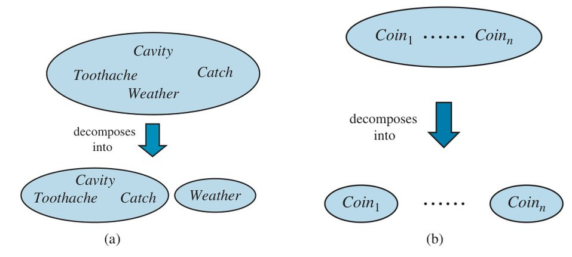
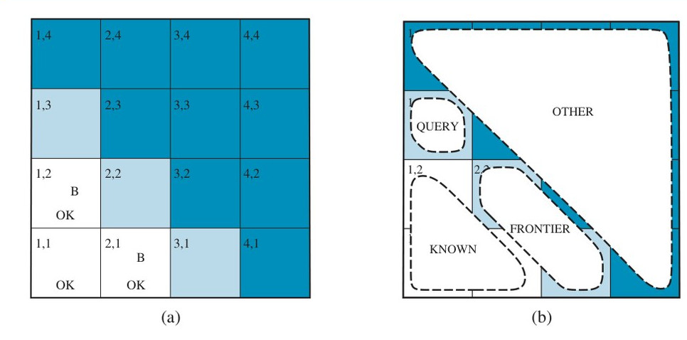
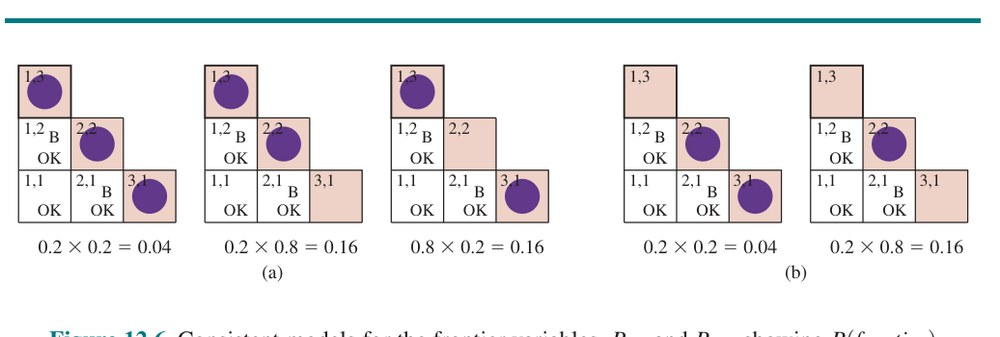

فصل ۱۲: کمی کردن عدم قطعیت (Quantifying Uncertainty)
عاملها در دنیای واقعی باید عدم قطعیت (Uncertainty) را مدیریت کنند؛ خواه ناشی از مشاهدهپذیری جزئی (Partial Observability) باشد، خواه ناجبرگرایی (Nondeterminism) یا دشمنان. عامل ممکن است هرگز بهطور قطع نداند اکنون در چه حالتی است یا پس از توالی از کنشها به کجا خواهد رسید.
ما دیدهایم عاملهای حل مسئله و منطقی چگونه با نگهداشتن «حالت باور» (Belief State)—بازنماییِ مجموعهٔ همهٔ حالتهای جهانِ ممکنی که ممکن است در آن باشد—و تولید «برنامهٔ اقتضایی» (Contingency Plan) که با هر پیشامدِ ممکنی که حسگرها در طول اجرا گزارش کنند کنار بیاید، عدم قطعیت را مدیریت میکنند. این رویکرد روی مسائل ساده کار میکند، اما عیبهایی دارد:
فرض کنید، برای نمونه، یک تاکسی خودکار هدفِ رساندن مسافر بهموقع به فرودگاه را دارد. تاکسی برنامهای به نام A90 میسازد که شامل ترک خانه ۹۰ دقیقه قبل از پرواز و رانندگی با سرعت معقول است. حتی با وجود اینکه فرودگاه فقط ۸ کیلومتر فاصله دارد، عامل منطقی نمیتواند با یقین مطلق نتیجه بگیرد که «برنامهٔ A90 ما را بهموقع به فرودگاه میرساند.» در عوض، به نتیجهٔ ضعیفتری میرسد: «برنامهٔ A90 ما را بهموقع به فرودگاه میرساند، تا زمانی که ماشین خراب نشود، تصادف نکنم، جاده بسته نباشد، شهابسنگی به ماشین نخورد، و ... .» هیچیک از این شرایط را نمیتوان با قطعیت استنتاج کرد، پس نمیتوانیم استنتاج کنیم که برنامه موفق میشود. این «مسئلهٔ تحدید» (Qualification Problem) منطقی است (صفحهٔ ۲۴۱) که تاکنون برایش راهحل واقعی ندیدهایم.
با این حال، از جهتی A90 در واقع کارِ درست است. مقصودمان چیست؟
همانطور که در فصل ۲ بحث کردیم، مقصود این است که از میان همهٔ برنامههایی که میتوان اجرا کرد، انتظار میرود A90 «معیار عملکرد» (Performance Measure) عامل را بیشینه کند (که انتظار نسبت به دانشِ عامل دربارهٔ محیط است). معیار عملکرد شامل رسیدن بهموقع به فرودگاه برای پرواز، پرهیز از انتظارِ طولانی و بیحاصل در فرودگاه، و پرهیز از جریمهٔ سرعت در طول مسیر است. دانشِ عامل نمیتواند هیچیک از این پیامدها را برای A90 تضمین کند، اما میتواند درجهٔ باوری از حصولِ آنها فراهم کند.
برنامههای دیگر، مانند A180، ممکن است باورِ عامل به رسیدن بهموقع به فرودگاه را افزایش دهند، اما احتمالِ انتظارِ طولانی و کسلکننده را نیز افزایش دهند. کارِ درست—«تصمیم عقلایی» (Rational Decision)—بنابراین هم به اهمیتِ نسبی هدفهای گوناگون بستگی دارد و هم به احتمالِ اینکه به آنها برسیم و میزانِ رسیدن به آنها. بقیهٔ این بخش این ایدهها را صیقل میدهد، آمادهسازی برای توسعهٔ نظریههای عمومیِ استدلالِ نامطمئن و تصمیمهای عقلایی که در این فصل و فصلهای بعدی ارائه میکنیم.
مثالی از استدلالِ نامطمئن را در نظر بگیریم: تشخیصِ دنداندردِ بیمارِ دندانپزشکی.
تشخیص—خواه برای پزشکی، خواه تعمیر خودرو یا هر چیز دیگر—تقریباً همیشه با عدم قطعیت همراه است. بیایید با منطق گزارهای قاعدههایی برای تشخیصِ دندانپزشکی بنویسیم تا ببینیم رویکردِ منطقی چگونه از هم میپاشد. قاعدهٔ سادهٔ زیر را در نظر بگیرید:
Toothache ⇒ Cavityمشکل این است که این قاعده نادرست است. همهٔ بیمارانِ با دنداندرد پوسیدگی ندارند؛ برخی بیماریِ لثه دارند، برخی آبسه، یا یکی از چند مشکل دیگر:
Toothache ⇒ Cavity ∨ GumProblem ∨ Abscess ∨ ...متأسفانه، برای درستکردن قاعده باید فهرستی تقریباً نامحدود از مشکلاتِ ممکن بیفزاییم. میتوانیم قاعده را به قاعدهٔ علّی تبدیل کنیم:
Cavity ⇒ Toothacheاما این قاعده هم درست نیست؛ همهٔ پوسیدگیها درد ایجاد نمیکنند. تنها راهِ درستکردن قاعده آن است که آن را بهلحاظ منطقی جامع کنیم: سمتِ چپ را با همهٔ شرایطِ لازم برای اینکه پوسیدگی موجب دنداندرد شود تقویت کنیم. تلاش برای استفاده از منطق در حوضهای مانند تشخیصِ پزشکی بدین ترتیب به سه دلیلِ اصلی شکست میخورد:
ارتباط میان دنداندرد و پوسیدگی در هیچیک از دو جهت یک نتیجهٔ منطقیِ اکید نیست. این ویژگیِ حوزهٔ پزشکی و نیز اغلب حوزههای قضاوتیِ دیگر است: حقوق، تجارت، طراحی، تعمیر خودرو، باغبانی، دوستیابی و مانند آن. دانشِ عامل در بهترین حالت فقط میتواند «درجهٔ باور» (Degree of Belief) به جملههای مربوط فراهم کند. ابزارِ اصلی ما برای سروکار داشتن با درجههای باور، «نظریهٔ احتمال» (Probability Theory) است. در اصطلاحشناسی بخش ۸.۱، «تعهدهای هستیشناختی» (Ontological Commitments) منطق و نظریهٔ احتمال یکساناند—جهان از واقعیتهایی ساخته شده که در هر موردِ خاص برقرارند یا برقرار نیستند—اما «تعهدهای شناختشناختی» (Epistemological Commitments) متفاوتاند: عاملِ منطقی به هر جمله باور دارد که صادق یا کاذب است یا نظری ندارد، در حالی که عاملِ احتمالاتی ممکن است درجهٔ باورِ عددی بین ۰ (برای جملههای قطعاً کاذب) و ۱ (قطعاً صادق) داشته باشد.
نظریهٔ احتمال راهی برای خلاصهسازیِ عدم قطعیتِ ناشی از تنبلی و نادانیِ ما فراهم میکند و بدینترتیب مسئلهٔ تحدید را حل میکند. شاید بهطور قطع ندانیم چه چیزی بیمارِ خاصی را آزار میدهد، اما باور داریم که مثلاً ۸۰٪ احتمال—یعنی احتمالِ ۰.۸—دارد بیماری که دنداندرد دارد پوسیدگی داشته باشد. یعنی انتظار داریم از میان همهٔ وضعیتهایی که تا آنجا که دانشِ ما میرسد از وضعیتِ کنونی تمایزناپذیرند، بیمار در ۸۰٪ آنها پوسیدگی داشته باشد. این باور میتواند از دادههای آماری—۸۰٪ بیمارانِ دنداندردِ دیدهشده تاکنون پوسیدگی داشتهاند—یا از دانشِ عمومیِ دندانپزشکی، یا از ترکیبی از منابعِ شواهد به دست آمده باشد.
نکتهٔ گیجکنندهای هست: در لحظهٔ تشخیص، در جهانِ واقعی عدم قطعیتی وجود ندارد؛ بیمار یا پوسیدگی دارد یا ندارد. پس معنای گفتن اینکه احتمالِ پوسیدگی ۰.۸ است چیست؟ نباید ۰ یا ۱ باشد؟ پاسخ این است که گزارههای احتمال نسبت به یک «حالتِ دانش» (Knowledge State) بیان میشوند، نه نسبت به جهانِ واقعی. میگوییم «احتمال اینکه بیمار پوسیدگی داشته باشد، بهشرطی که دنداندرد داشته باشد، ۰.۸ است.» اگر بعداً بیاموزیم بیمار سابقهٔ بیماریِ لثه دارد، میتوانیم گزارهٔ متفاوتی بیان کنیم:
P(cavity | toothache ∧ gumdisease) = 0.8این دو گزاره با هم تناقض ندارند؛ هر یک ادعایی جداگانه دربارهٔ حالتِ دانشِ متفاوتی است.
برنامهٔ A90 برای رسیدن به فرودگاه را بار دیگر در نظر بگیرید. فرض کنید به ما ۹۷٪ شانسِ رسیدن به پرواز میدهد. آیا این بدان معناست انتخابِ عقلایی است؟ نه لزوماً: ممکن است برنامههای دیگری مانند A180 با احتمالهای بالاتر وجود داشته باشند. اگر از دستندادنِ پرواز حیاتی باشد، پس ارزش دارد ریسکِ انتظارِ طولانیتر در فرودگاه را بپذیریم. A1440 چطور، برنامهای که شامل ترک خانه ۲۴ ساعت زودتر است؟ در بیشتر شرایط این انتخابِ خوبی نیست، زیرا اگرچه تقریباً رسیدنِ بهموقع را تضمین میکند، انتظاری طاقتفرسا به همراه دارد—ناگفته نماند احتمالِ رژیمِ غذاییِ ناخوشایند از غذای فرودگاه.
برای چنین انتخابهایی، عامل نخست باید «ترجیحهایی» (Preferences) بین پیامدهای مختلفِ برنامههای مختلف داشته باشد. هدف میتواند کمّی شود: در حالی که هدفِ منطقیِ سادهٔ «رسیدنِ بهموقع» را میتوان با یک بولی بیان کرد، ما ممکن است بخواهیم مقیاسِ درجهبندیشدهای از پیامدها داشته باشیم: رسیدنِ بهموقع برای پرواز پیامدی بهتر از رسیدن ۳۰ دقیقه دیرتر است، که بهنوبهٔ خود بهتر از رسیدن ۵ ساعت دیرتر است، که بهتر از رسیدن ۵ ساعت دیرتر در طوفانِ برف است. در این مقیاسِ درجهبندیشده، از مفهوم «مطلوبیت» (Utility) استفاده میکنیم، که ابتدا در بخش ۲.۴.۶ معرفی شد. مطلوبیتِ یک حالت نسبت به یک عامل است. برای نمونه، مطلوبیتِ حالتی که در آن سفید در شطرنج سیاه را کیشومات کرده است، بدیهی است برای عاملی که با سفید بازی میکند بالاست، اما برای عاملی که با سیاه بازی میکند پایین. اما نمیتوانیم دقیقاً از امتیازهای ۱، ۱/۲ و ۰ که قواعدِ شطرنجِ مسابقاتی تحمیل میکنند پیروی کنیم—برخی بازیکنان (از جمله نویسندگان) ممکن است از تساوی با قهرمانِ جهان سر از پا نشناسند، در حالی که بازیکنانِ دیگر (از جمله قهرمانِ سابقِ جهان) شاید نباشند. سلیقه یا ترجیح را نمیتوان حسابکشی کرد: ممکن است فکر کنید عاملی که بستنیِ آدامسی-هالاپینو را به چیپسِ شکلاتی ترجیح میدهد عجیب است، اما نمیتوانید بگویید آن عامل ناعقلایی است. تابعِ مطلوبیت میتواند هر مجموعهای از ترجیحها را توضیح دهد—عجیب یا معمولی، بزرگوارانه یا منحرفانه. توجه کنید که مطلوبیتها میتوانند نوعدوستی را نیز توضیح دهند، صرفاً با گنجاندنِ رفاهِ دیگران بهعنوان یکی از عوامل.
ترجیحها، که با مطلوبیتها بیان میشوند، با احتمالها در نظریهٔ عمومیِ تصمیمهای عقلایی به نام «نظریهٔ تصمیم» (Decision Theory) ترکیب میشوند:
نظریهٔ تصمیم = نظریهٔ احتمال + نظریهٔ مطلوبیتایدهٔ بنیادیِ نظریهٔ تصمیم این است که عامل عقلایی است اگر و فقط اگر کنشی را برگزیند که بالاترین «مطلوبیتِ مورد انتظار» (Expected Utility) را به دست دهد، میانگینگرفته بر همهٔ پیامدهای ممکنِ کنش. این «اصلِ بیشینهٔ مطلوبیتِ مورد انتظار» (Maximum Expected Utility یا MEU) نامیده میشود. در اینجا «مورد انتظار» یعنی «میانگین»، یا «میانگینِ آماری» مطلوبیتهای پیامد، وزندادهشده با احتمالِ پیامد. این اصل را در فصل ۵ هنگام اشارهٔ گذرا به تصمیمهای بهینه در تختهنرد در عمل دیدیم؛ در واقع اصلی کاملاً عمومی برای تصمیمگیریِ تکعاملی است. شکل ۱۲.۱ ساختارِ عاملی را ترسیم میکند که برای انتخابِ کنشها از نظریهٔ تصمیم استفاده میکند:
function DT-AGENT(percept) returns an action
persistent: belief state, probabilistic beliefs about the current state of the world
action, the agent's action
update the belief state based on the action and percept
calculate the probabilities of outcomes for actions,
given the action descriptions and current belief state
choose the action with the highest expected utility
given the outcome probabilities and utility information
return actionعامل در سطحِ انتزاعی یکسان با عاملهای توصیفشده در فصلهای ۴ و ۷ است که حالتِ باوری بازتابدهندهٔ تاریخچهٔ ادراکها تاکنون نگهداری میکنند. تفاوتِ اصلی این است که حالتِ باورِ عاملِ نظریهتصمیمی نه فقط امکانهای حالتهای جهان، بلکه احتمالهای آنها را نیز بازنمایی میکند. با حالتِ باور و دانشی از اثرهای کنشها، عامل میتواند پیشبینیهای احتمالاتیِ پیامدهای کنش انجام دهد و در نتیجه کنشی را برگزیند که بالاترین مطلوبیتِ مورد انتظار را دارد.
این فصل و فصلِ بعد بر وظیفهٔ بازنمایی و محاسبه با اطلاعاتِ احتمالاتی بهطور کلی تمرکز میکنند. فصل ۱۴ به روشهای مسائلِ خاصِ بازنمایی و بهروزرسانیِ حالتِ باور در طولِ زمان و پیشبینیِ پیامدها میپردازد. فصل ۱۵ راههای ترکیبِ نظریهٔ احتمال با زبانهای صوریِ بیانی مانند منطقِ مرتبهٔ اول و زبانهای برنامهنویسیِ همهمنظوره را بررسی میکند. فصل ۱۶ نظریهٔ مطلوبیت را عمیقتر پوشش میدهد، و فصل ۱۷ الگوریتمهایی برای برنامهریزیِ توالیهای کنش در محیطهای تصادفی توسعه میدهد. فصل ۱۸ بسطِ این ایدهها به محیطهای چندعاملی را پوشش میدهد.
برای اینکه عاملِ ما اطلاعاتِ احتمالاتی را بازنمایی و استفاده کند، به زبانِ صوری نیاز داریم.
زبانِ نظریهٔ احتمال بهطور سنتی غیررسمی بوده، توسط ریاضیدانانِ انسانی برای ریاضیدانانِ انسانیِ دیگر نوشته میشده. پیوستِ الف مقدمهٔ استانداردی بر نظریهٔ احتمالِ مقدماتی دارد؛ در اینجا، رویکردی متناسبتر با نیازهای هوش مصنوعی اتخاذ و آن را با مفاهیمِ منطقِ صوری پیوند میدهیم.
مانند گزارههای منطقی، گزارههای احتمالاتی دربارهٔ جهانهای ممکناند. در حالی که گزارههای منطقی میگویند کدام جهانهای ممکن بهطور قطعی کنار گذاشته میشوند (همهٔ آنهایی که گزاره در آنها کاذب است)، گزارههای احتمالاتی دربارهٔ میزانِ محتملبودنِ جهانهای گوناگون سخن میگویند. در نظریهٔ احتمال، مجموعهٔ همهٔ جهانهای ممکن «فضای نمونه» (Sample Space) نامیده میشود. جهانهای ممکن دو به دو مانعةالجمع و استیفاگرند—دو جهانِ ممکن نمیتوانند هر دو برقرار باشند و یک جهانِ ممکن باید برقرار باشد. برای نمونه، اگر بخواهیم دو تاس (متمایز) بیندازیم، ۳۶ جهانِ ممکن برای در نظر گرفتن داریم: (1,1), (1,2), ..., (6,6). حرفِ یونانی Ω (اُمگای بزرگ) برای اشاره به فضای نمونه استفاده میشود و ω (اُمگای کوچک) به عناصرِ فضا، یعنی جهانهای ممکنِ خاص، اشاره دارد.
«مدلِ احتمال» (Probability Model) کاملاً مشخصشده با هر جهانِ ممکنِ ω یک احتمالِ عددیِ P(ω) مرتبط میکند.¹ اصلهای پایهٔ نظریهٔ احتمال میگویند هر جهانِ ممکن احتمالی بین ۰ و ۱ دارد و احتمالِ کلِ مجموعهٔ جهانهای ممکن ۱ است:
0 ≤ P(ω) ≤ 1 برای هر ω و ∑ P(ω) = 1 (12.1)
ω∈Ωبرای نمونه، اگر فرض کنیم هر تاس منصفانه است و انداختنها با هم تداخل نمیکنند، آنگاه هر یک از جهانهای ممکن (1,1), (1,2), ..., (6,6) احتمالِ 1/36 دارد. اگر تاسها تقلبشده باشند، برخی جهانها احتمالِ بالاتر و برخی پایینتر خواهند داشت، اما همه همچنان به ۱ جمع خواهند شد. گزارهها و پرسوجوهای احتمالاتی معمولاً دربارهٔ جهانهای ممکنِ خاص نیستند، بلکه دربارهٔ مجموعههایی از آنها هستند. برای نمونه، ممکن است بپرسیم احتمالِ اینکه دو تاس مجموعشان ۱۱ شود چقدر است، احتمالِ اینکه دول بیاید چقدر است، و مانند آن. در نظریهٔ احتمال، این مجموعهها «رخداد» (Event) نامیده میشوند—اصطلاحی که در فصل ۱۰ بهوفور برای مفهومِ متفاوتی استفاده شد. در منطق، مجموعهای از جهانها با گزارهای در زبانِ صوری متناظر است؛ بهطور خاص، برای هر گزاره، مجموعهٔ متناظر فقط آن جهانهای ممکنی را در بر میگیرد که گزاره در آنها برقرار است. (از این رو، «رخداد» و «گزاره» در این زمینه تقریباً یک معنا دارند، جز اینکه گزاره در زبانِ صوری بیان میشود.) احتمالِ مرتبط با گزاره بهصورت جمعِ احتمالهای جهانهایی تعریف میشود که گزاره در آنها برقرار است:
برای هر گزارهٔ φ، P(φ) = ∑ P(ω) (12.2)
ω∈φبرای نمونه، هنگام انداختنِ تاسهای منصفانه، P(Total=11) = P((5,6)) + P((6,5)) = 1/36 + 1/36 = 1/18 داریم. توجه کنید که نظریهٔ احتمال به دانشِ کامل از احتمالهای هر جهانِ ممکن نیاز ندارد. برای نمونه، اگر باور داشته باشیم تاسها برای تولیدِ عددِ یکسان تبانی میکنند، ممکن است بدون دانستنِ اینکه آیا تاسها دولِ ۶ را به دولِ ۲ ترجیح میدهند، P(doubles) = 1/4 را اظهار کنیم. همانند گزارههای منطقی، این اظهار، مدلِ احتمالِ زیربنایی را قید میزند بدون آنکه کاملاً تعیینش کند.
احتمالهایی مانند P(Total=11) و P(doubles) «احتمالِ نامشروط» (Unconditional Probability) یا «احتمالِ پیشینی» (Prior Probability) نامیده میشوند (و گاهی بهاختصار فقط «پیشین»)؛ آنها به درجههای باور به گزارهها در غیابِ هر اطلاعاتِ دیگری اشاره دارند. اما بیشترِ اوقات اطلاعاتی داریم، معمولاً «شاهد» (Evidence)، که قبلاً آشکار شده. برای نمونه، تاسِ اول ممکن است ۵ نشان دهد و ما با نفسِ حبسشده منتظریم دیگری از چرخش بایستد. در آن صورت، به احتمالِ نامشروطِ آمدنِ دول علاقهمند نیستیم، بلکه به «احتمالِ شرطی» (Conditional Probability) یا «احتمالِ پسینی» (Posterior Probability) (یا بهاختصار «پسین») آمدنِ دول بهشرطِ اینکه تاسِ اول ۵ باشد. این احتمال P(doubles | Die1=5) نوشته میشود، که در آن «|» «بهشرط» تلفظ میشود.² بهطور مشابه، اگر برای معاینهٔ دورهایِ برنامهریزیشده نزد دندانپزشک بروم، احتمالِ پیشینیِ P(cavity)=0.2 ممکن است موردِ علاقه باشد؛ اما اگر به دلیلِ دنداندرد نزد دندانپزشک بروم، احتمالِ شرطیِ P(cavity | toothache)=0.6 است که اهمیت دارد.
درکِ این نکته مهم است که P(cavity)=0.2 پس از مشاهدهٔ دنداندرد همچنان معتبر است؛ فقط چندان مفید نیست. هنگام تصمیمگیری، عامل باید بر همهٔ شواهدی که مشاهده کرده شرطی کند. همچنین درکِ تفاوت میان شرطیکردن و استلزامِ منطقی مهم است. اظهار اینکه P(cavity | toothache)=0.6 به این معنا نیست که «هرگاه دنداندرد صادق است، نتیجه بگیر پوسیدگی با احتمالِ ۰.۶ صادق است»؛ بلکه به این معناست که «هرگاه دنداندرد صادق است و اطلاعاتِ بیشتری نداریم، نتیجه بگیر پوسیدگی با احتمالِ ۰.۶ صادق است.» شرطِ اضافی مهم است؛ برای نمونه، اگر اطلاعاتِ بیشتری داشتیم که دندانپزشک هیچ پوسیدگیای نیافته، قطعاً نمیخواهیم نتیجه بگیریم پوسیدگی با احتمالِ ۰.۶ صادق است؛ در عوض باید از P(cavity | toothache ∧ ¬cavity) = 0 استفاده کنیم.
از نظرِ ریاضی، احتمالهای شرطی بر حسبِ احتمالهای نامشروط بهصورتِ زیر تعریف میشوند: برای هر گزارهٔ a و b داریم
P(a | b) = P(a ∧ b) / P(b) (12.3)که هرگاه P(b) > 0 برقرار است. برای نمونه، P(doubles | Die1=5) = P(doubles ∧ Die1=5) / P(Die1=5). تعریف وقتی معنا پیدا میکند که به یاد آوریم مشاهدهٔ b همهٔ جهانهای ممکنی را که b در آنها کاذب است کنار میگذارد و مجموعهای به جا میگذارد که احتمالِ کلش دقیقاً P(b) است. درونِ آن مجموعه، جهانهایی که a در آنها صادق است باید a ∧ b را ارضا کنند و کسریِ P(a∧b)/P(b) را تشکیل میدهند.
تعریفِ احتمالِ شرطی، معادلهٔ (12.3)، میتواند به شکلِ متفاوتی نوشته شود که «قاعدهٔ ضرب» (Product Rule) نامیده میشود:
P(a ∧ b) = P(a | b) P(b) (12.4)قاعدهٔ ضرب شاید راحتتر به خاطر بماند: از این واقعیت میآید که برای صادقبودنِ a و b، نیاز داریم b صادق باشد، و همچنین نیاز داریم a بهشرطِ b صادق باشد.
در این فصل و فصلِ بعد، گزارههای توصیفکنندهٔ مجموعههای جهانهای ممکن معمولاً با نمادی نوشته میشوند که عناصرِ منطقِ گزارهای و نمادِ ارضایِ قید را ترکیب میکند. در اصطلاحشناسیِ بخش ۲.۴.۷، «بازنماییِ عاملی» (Factored Representation) است، که در آن جهانِ ممکن با مجموعهای از جفتهای متغیر/مقدار بازنمایی میشود. بازنماییِ ساختاریافتهٔ بیانیتری نیز ممکن است، چنانکه در فصل ۱۵ نشان داده میشود.
متغیرها در نظریهٔ احتمال «متغیرِ تصادفی» (Random Variable) نامیده میشوند و نامهایشان با حرفِ بزرگ شروع میشود. بدینترتیب، در مثالِ تاس، Total و Die1 متغیرهای تصادفیاند. هر متغیرِ تصادفی تابعی است که از دامنهٔ جهانهای ممکنِ Ω به «برد» (Range)—مجموعهٔ مقادیرِ ممکنی که میتواند بگیرد—نگاشت میکند. بردِ Total برای دو تاس مجموعهٔ {2,...,12} و بردِ Die1 مجموعهٔ {1,...,6} است. نامِ مقادیر همیشه کوچک است، پس ممکن است ∑x P(X=x) بنویسیم تا روی مقادیرِ X جمع بزنیم. متغیرِ تصادفیِ بولی بردِ {true, false} دارد؛ برای نمونه، گزارهٔ اینکه دول آمده میتواند Doubles=true نوشته شود. (بردِ جایگزین برای متغیرهای بولی مجموعهٔ {0,1} است، که در آن صورت گفته میشود متغیر «توزیعِ برنولی» (Bernoulli Distribution) دارد.) طبقِ قرارداد، گزارههای شکلِ برنولیِ A=true بهاختصار a نوشته میشوند، در حالی که A=false بهاختصار ¬a. (استفادههای doubles، cavity و toothache در بخشِ پیشین مخففهایی از این دستاند.) بردها میتوانند مجموعههایی از نشانههای دلخواه باشند. ممکن است بردِ Age را مجموعهٔ {juvenile, teen, adult} برگزینیم و بردِ Weather ممکن است {sun, rain, cloud, snow} باشد. وقتی ابهامی ممکن نیست، رایج است که مقداری بهتنهایی بهجای گزارهٔ «متغیرِ خاصی آن مقدار را دارد» بایستد؛ بدینترتیب، sun میتواند بهجای Weather=sun بایستد.³ مثالهای پیشین همگی بردهای متناهی دارند. متغیرها میتوانند بردهای نامتناهی نیز داشته باشند—یا گسسته (مانند اعدادِ صحیح) یا پیوسته (مانند اعدادِ حقیقی). برای هر متغیر با بردِ مرتب، نامساویها نیز مجازند، مانند NumberOfAtomsInUniverse ≥ 10⁷⁰.
سرانجام، میتوانیم این نوع گزارههای مقدماتی (شامل شکلهای مخففِ متغیرهای بولی) را با استفاده از ربطهای منطقِ گزارهای ترکیب کنیم. برای نمونه، میتوانیم «احتمال اینکه بیمار پوسیدگی داشته باشد، بهشرطِ اینکه نوجوانی بدونِ دنداندرد باشد، ۰.۱ است» را بهصورتِ زیر بیان کنیم:
P(cavity | ¬toothache ∧ teen) = 0.1در نمادِ احتمال، استفاده از ویرگول برای عطف نیز رایج است، پس میتوانیم P(cavity | ¬toothache, teen) بنویسیم. گاهی میخواهیم دربارهٔ احتمالهای همهٔ مقادیرِ ممکنِ یک متغیرِ تصادفی سخن بگوییم. میتوانیم بنویسیم:
P(Weather=sun) = 0.6
P(Weather=rain) = 0.1
P(Weather=cloud) = 0.29
P(Weather=snow) = 0.01اما بهعنوانِ مخفف اجازه میدهیم P(Weather) = ⟨0.6, 0.1, 0.29, 0.01⟩، که در آن P پررنگ نشان میدهد نتیجه بردارِ اعداد است، و فرض میکنیم ترتیبِ ازپیشتعریفشدهٔ ⟨sun, rain, cloud, snow⟩ روی بردِ Weather وجود دارد. میگوییم گزارهٔ P یک «توزیعِ احتمال» (Probability Distribution) برای متغیرِ تصادفیِ Weather تعریف میکند—یعنی تخصیصِ احتمالی به هر مقدارِ ممکنِ متغیرِ تصادفی. (در این مورد، با بردِ متناهی و گسسته، توزیع «توزیعِ رستای» (Categorical Distribution) نامیده میشود.) نمادِ P همچنین برای توزیعهای شرطی استفاده میشود: P(X|Y) مقادیرِ P(X=xi | Y=yj) را برای هر جفتِ ممکنِ i، j میدهد. برای متغیرهای پیوسته، نوشتنِ کلِ توزیع بهصورتِ بردار ممکن نیست، زیرا بینهایت مقدار وجود دارد. در عوض، میتوانیم احتمالِ اینکه متغیرِ تصادفی مقدارِ x بگیرد را بهصورتِ تابعِ پارامترشدهٔ x تعریف کنیم، که معمولاً «تابعِ چگالیِ احتمال» (Probability Density Function) نامیده میشود. برای نمونه، جملهٔ
P(NoonTemp=x) = Uniform(x; 18°C, 26°C)باور به اینکه دمایِ ظهر بهطور یکنواخت بین ۱۸ و ۲۶ درجهٔ سانتیگراد توزیع شده را بیان میکند. توابعِ چگالیِ احتمال (گاهی pdf نامیده میشوند) از نظرِ معنا با توزیعهای گسسته تفاوت دارند. گفتن اینکه چگالیِ احتمال از ۱۸ تا ۲۶ درجهٔ سانتیگراد یکنواخت است بدان معناست که ۱۰۰٪ شانس وجود دارد دما جایی در آن ناحیهٔ ۸-درجهای بیفتد و ۵۰٪ شانس در هر ناحیهٔ ۴-درجهای فرعی، و مانند آن. چگالیِ احتمالِ متغیرِ تصادفیِ پیوستهٔ X در مقدارِ x را P(X=x) یا فقط P(x) مینویسیم؛ تعریفِ شهودی بهصورتِ زیر است:
P(x) = lim(dx→0) P(x ≤ X ≤ x+dx) / dxبرای NoonTemp داریم:
P(NoonTemp=x) = Uniform(x; 18°C, 26°C) = { 1/(8°C) اگر 18°C ≤ x ≤ 26°C
0 در غیر این صورت }که در آن C بهمعنای سانتیگراد است (نه ثابت). در P(NoonTemp=20.18°C) = 1/(8°C)، توجه کنید که 1/(8°C) احتمال نیست؛ «چگالیِ احتمال» است. احتمالِ اینکه NoonTemp دقیقاً 20.18°C باشد صفر است، زیرا 20.18°C ناحیهای با پهنای ۰ است. برخی نویسندگان برای احتمالهای گسسته و چگالیهای احتمال نمادهای متفاوتی استفاده میکنند؛ ما در هر دو مورد از P برای مقادیرِ احتمالِ خاص و P برای بردارهای مقادیر استفاده میکنیم، زیرا بهندرت اشتباه رخ میدهد و معادلهها معمولاً یکساناند. توجه کنید که احتمالها اعدادِ بدونِ واحدند، در حالی که توابعِ چگالی با یک واحد اندازهگیری میشوند، در این مورد درجهٔ سانتیگرادِ معکوس. اگر همان بازهٔ دمایی بر حسبِ درجهٔ فارنهایت بیان میشد، پهنایی ۱۴.۴ درجه داشت و چگالی 1/(14.4°F) میشد.
حالا نحوِ گزارهها و اظهارهای احتمال را تعریف کردهایم و بخشی از معناشناسی را دادهایم: معادلهٔ (12.2) احتمالِ گزاره را بهصورتِ جمعِ احتمالهای جهانهایی تعریف میکند که گزاره در آنها برقرار است. برای کاملکردنِ معناشناسی، باید بگوییم جهانها چیستند و چگونه تعیین کنیم آیا گزارهای در جهانی برقرار است. این بخش را مستقیماً از معناشناسیِ منطقِ گزارهای قرض میگیریم، بهصورتِ زیر. «جهانِ ممکن» بهصورتِ تخصیصِ مقادیر به همهٔ متغیرهای تصادفیِ موردمطالعه تعریف میشود.
بهآسانی دیده میشود این تعریف الزامِ پایهٔ مانعةالجمع و استیفاکنندهبودنِ جهانهای ممکن را برآورده میکند (تمرین ۱۲.EXEX). برای نمونه، اگر متغیرهای تصادفی Cavity، Toothache و Weather باشند، آنگاه 2×2×4=16 جهانِ ممکن وجود دارد. علاوه بر این، صدقِ هر گزارهٔ معین در چنین جهانهایی بهآسانی با همان محاسبهٔ بازگشتیِ صدق که برای منطقِ گزارهای استفاده کردیم تعیین میشود (صفحهٔ ۲۱۸ را ببینید).
توجه کنید که برخی متغیرهای تصادفی ممکن است زائد باشند، به این معنا که مقادیرشان در همهٔ موارد از مقادیرِ متغیرهای دیگر قابلِ حصول است. برای نمونه، متغیرِ Doubles در جهانِ دوتاسی دقیقاً وقتی صادق است که Die1 = Die2. گنجاندنِ Doubles بهعنوانِ یکی از متغیرهای تصادفی، علاوه بر Die1 و Die2، ظاهراً شمارِ جهانهای ممکن را از ۳۶ به ۷۲ افزایش میدهد، اما البته دقیقاً نیمی از آن ۷۲ بهلحاظِ منطقی ناممکن خواهند بود و احتمالِ ۰ خواهند داشت.
از تعریفِ پیشینِ جهانهای ممکن نتیجه میشود که مدلِ احتمال کاملاً توسط «توزیعِ مشترک» برای همهٔ متغیرهای تصادفی تعیین میشود—«توزیعِ احتمالِ مشترکِ کامل» (Full Joint Probability Distribution) موسوم. برای نمونه، با Cavity، Toothache و Weather، توزیعِ مشترکِ کامل P(Cavity, Toothache, Weather) است. این توزیعِ مشترک میتواند بهصورتِ جدولِ 2×2×4 با ۱۶ درایه بازنمایی شود. از آنجا که احتمالِ هر گزاره جمعی روی جهانهای ممکن است، توزیعِ مشترکِ کامل اصولاً برای محاسبهٔ احتمالِ هر گزارهای کافی است. نمونههایی از چگونگیِ انجامِ این کار را در بخش ۱۲.۳ خواهیم دید.
اصلهای پایهٔ احتمال (معادلههای (12.1) و (12.2)) روابطِ معینی را میان درجههای باوری که میتوان به گزارههای مرتبطِ منطقی نسبت داد، مستلزم میشوند. برای نمونه، میتوانیم رابطهٔ آشنا میان احتمالِ یک گزاره و احتمالِ نقیضش را استخراج کنیم:
P(¬a) = ∑ P(ω) [با معادلهٔ (12.2)]
ω∈¬a
= ∑ P(ω) + ∑ P(ω) − ∑ P(ω)
ω∈¬a ω∈a ω∈a
= ∑ P(ω) − ∑ P(ω) [گروهبندی دو جملهٔ نخست]
ω∈Ω ω∈a
= 1 − P(a) [با (12.1) و (12.2)]همچنین میتوانیم فرمولِ شناختهشدهٔ احتمالِ فصلی را استخراج کنیم، که گاهی «اصلِ شمول–اخراج» (Inclusion–Exclusion Principle) نامیده میشود:
P(a ∨ b) = P(a) + P(b) − P(a ∧ b) (12.5)این قاعده بهآسانی به یاد میماند با یادآوری اینکه حالتهایی که a در آنها برقرار است، همراه با حالتهایی که b در آنها برقرار است، قطعاً همهٔ حالتهایی را که a ∨ b در آنها برقرار است میپوشانند؛ اما جمعِ دو مجموعهٔ حالتها اشتراکشان را دو بار میشمارد، پس باید P(a∧b) را کم کنیم.
معادلههای (12.1) و (12.5) اغلب «اصلهای کولموگوروف» (Kolmogorov's Axioms) نامیده میشوند به افتخارِ ریاضیدانِ آندری کولموگوروف، که نشان داد چگونه بقیهٔ نظریهٔ احتمال را از این شالودهٔ ساده بسازیم و چگونه با دشواریهای ناشی از متغیرهای پیوسته کنار بیاییم.⁴ در حالی که معادلهٔ (12.2) طعمِ تعریفی دارد، معادلهٔ (12.5) آشکار میکند اصلها واقعاً درجههای باوری را که عامل میتواند دربارهٔ گزارههای مرتبطِ منطقی داشته باشد قید میزنند. این مشابه این واقعیت است که عاملِ منطقی نمیتواند همزمان به A، B و ¬(A∧B) باور داشته باشد، زیرا هیچ جهانِ ممکنی وجود ندارد که هر سه در آن صادق باشند. اما با احتمالها، گزارهها مستقیماً به جهان اشاره نمیکنند، بلکه به حالتِ دانشِ خودِ عامل اشاره میکنند. پس چرا عامل نمیتواند مجموعهٔ باورهای زیر را داشته باشد (حتی اگر اصلهای کولموگوروف را نقض کنند)؟
P(a) = 0.4
P(b) = 0.3
P(a ∧ b) = 0.0
P(a ∨ b) = 0.8 (12.6)این نوع پرسش دههها موضوعِ بحثِ شدید میان کسانی بوده که از احتمال بهعنوانِ تنها شکلِ مشروعِ درجهٔ باور طرفداری میکنند و کسانی که رویکردهای جایگزین را پیشنهاد میکنند.
یک استدلال برای اصلهای احتمال، که نخستین بار در ۱۹۳۱ توسط برونو دو فینتی بیان شد (ترجمهٔ انگلیسی: de Finetti, 1993)، چنین است: اگر عاملی درجهٔ باوری به گزارهٔ a دارد، آنگاه عامل باید بتواند شانسهایی را بیان کند که در آنها نسبت به شرطبندیِ موافق یا مخالفِ a بیتفاوت است.⁵ آن را بازیای میان دو عامل در نظر بگیرید: عامل ۱ میگوید «درجهٔ باورِ من به رخدادِ a برابر ۰.۴ است.» عامل ۲ پس از آن آزاد است انتخاب کند برای یا علیهِ a با سرمایهای سازگار با درجهٔ باورِ بیانشده شرط ببندد. یعنی عامل ۲ میتواند شرطِ عامل ۱ را بپذیرد که a رخ خواهد داد، با پیشنهادِ ۶ دلار در برابرِ ۴ دلارِ عامل ۱. یا عامل ۲ میتواند شرطِ عامل ۱ را بپذیرد که ¬a رخ خواهد داد، با پیشنهادِ ۴ دلار در برابرِ ۶ دلارِ عامل ۱. سپس پیامدِ a را مشاهده میکنیم و هر که درست گفته باشد پول را جمع میکند. اگر درجههای باورِ فرد بهدرستیِ جهان را بازتاب ندهند، انتظار میرود در درازمدت از عاملی رقیب که باورهایش حالتِ جهان را دقیقتر بازتاب میدهند پول از دست بدهد.
قضیهٔ دو فینتی به انتخابِ مقادیرِ درست برای احتمالهای فردی مربوط نیست، بلکه به انتخابِ مقادیر برای احتمالهای گزارههای مرتبطِ منطقی مربوط است: اگر عامل ۱ مجموعهای از درجههای باور بیان کند که اصلهای نظریهٔ احتمال را نقض کنند، آنگاه ترکیبی از شرطبندیها توسط عامل ۲ وجود دارد که تضمین میکند عامل ۱ هر بار پول از دست بدهد. برای نمونه، فرض کنید عامل ۱ مجموعهٔ درجههای باور از معادلهٔ (12.6) را دارد. شکل ۱۲.۲ نشان میدهد اگر عامل ۲ انتخاب کند ۴ دلار روی a، ۳ دلار روی b و ۲ دلار روی ¬(a∨b) شرط ببندد، آنگاه عامل ۱ همیشه پول از دست میدهد، صرفنظر از پیامدهای a و b. قضیهٔ دو فینتی دلالت دارد هیچ عاملِ عقلایی نمیتواند باورهایی داشته باشد که اصلهای احتمال را نقض کنند.
| گزاره | باورِ عامل ۱ | شرطبندیِ عامل ۱ | شرطبندیِ عامل ۲ | سودِ عامل ۱ برای هر پیامد a,b | a,¬b | ¬a,b | ¬a,¬b |
|---|---|---|---|---|---|---|---|
| a | 0.4 | ۴ دلار روی a | ۶ دلار روی ¬a | −۶ | −۶ | ۴ | ۴ |
| b | 0.3 | ۳ دلار روی b | ۷ دلار روی ¬b | −۷ | ۳ | −۷ | ۳ |
| a ∨ b | 0.8 | ۲ دلار روی ¬(a∨b) | ۸ دلار روی a∨b | ۲ | ۲ | ۲ | −۸ |
| جمع | −۱۱ | −۱ | −۱ | −۱ |
یک ایرادِ رایج به قضیهٔ دو فینتی این است که این بازیِ شرطبندی نسبتاً تصنعی است. مثلاً اگر کسی از شرطبندی امتناع کند چه؟ آیا این بحث را پایان میدهد؟ پاسخ این است که بازیِ شرطبندی مدلی انتزاعی برای وضعیتِ تصمیمگیری است که هر عاملی در هر لحظه ناگزیر در آن درگیر است. هر کنش (شامل بیعملی) نوعی شرط است و هر پیامد را میتوان سودِ شرط دید. امتناع از شرطبندی مانند امتناع از گذشتنِ زمان است. استدلالهای فلسفیِ قویِ دیگری نیز برای استفاده از احتمالها مطرح شدهاند، که برجستهترینشان از کاکس (1946)، کارناپ (1950) و جینز (2003) است. هر یک مجموعهای از اصلها برای استدلال با درجههای باور میسازند: نبودِ تناقض، مطابقت با منطقِ معمولی (برای نمونه، اگر باور به A بالا رود، باور به ¬A باید پایین بیاید)، و مانند آن. تنها اصلِ بحثبرانگیز این است که درجههای باور باید اعداد باشند، یا دستکم مانندِ اعداد عمل کنند از این نظر که باید ترایایی (Transitive) داشته باشند (اگر باور به A از باور به B بیشتر است، که از باور به C بیشتر است، آنگاه باور به A باید از باور به C بیشتر باشد) و قابلِ مقایسه باشند (باور به A باید یکی از برابر، بیشتر یا کمتر از باور به B باشد). سپس میتوان اثبات کرد که احتمال تنها رویکردی است که این اصلها را ارضا میکند.
با این حال، دنیا همانطور که هست، گاهی نمایشهای عملی بلندتر از اثباتها سخن میگویند. موفقیتِ سامانههای استدلالِ مبتنی بر نظریهٔ احتمال در جذبِ پیرو بسیار مؤثرتر از استدلالهای فلسفی بوده. اکنون میبینیم چگونه میتوان اصلها را برای استنتاج به کار گرفت.
در این بخش روشِ سادهای برای «استنتاجِ احتمالاتی» (Probabilistic Inference)—یعنی محاسبهٔ احتمالهای پسینی برای گزارههای «پرسوجو» (Query) با توجه به شواهدِ مشاهدهشده—توصیف میکنیم. از توزیعِ مشترکِ کامل بهعنوانِ «پایگاهِ دانشی» استفاده میکنیم که پاسخهای همهٔ پرسشها ممکن است از آن استخراج شود. در طولِ مسیر چند فنِ مفید برای دستکاریِ معادلههای مربوط به احتمالها نیز معرفی میکنیم. با مثالِ سادهای شروع میکنیم: حوزهای شامل فقط سه متغیرِ بولیِ Toothache، Cavity و Catch (پروبِ فلزیِ تیزِ دندانپزشک در دندانِ من گیر میکند). توزیعِ مشترکِ کامل جدولِ 2×2×2 مانند شکل ۱۲.۳ است:
| toothache | ¬toothache | |||
|---|---|---|---|---|
| catch | ¬catch | catch | ¬catch | |
| cavity | 0.108 | 0.012 | 0.072 | 0.008 |
| ¬cavity | 0.016 | 0.064 | 0.144 | 0.576 |
توجه کنید که احتمالهای توزیعِ مشترک به ۱ جمع میشوند، چنانکه اصلهای احتمال اقتضا میکنند. همچنین توجه کنید معادلهٔ (12.2) راهی مستقیم برای محاسبهٔ احتمالِ هر گزارهای، ساده یا پیچیده، به ما میدهد: بهسادگی آن جهانهای ممکنی را که گزاره در آنها صادق است شناسایی کن و احتمالهایشان را جمع کن. برای نمونه، شش جهانِ ممکن وجود دارد که cavity ∨ toothache در آنها برقرار است:
P(cavity ∨ toothache) = 0.108 + 0.012 + 0.072 + 0.008 + 0.016 + 0.064 = 0.28یک مسئلهٔ بهویژه رایج، استخراجِ توزیع روی زیرمجموعهای از متغیرها یا متغیری تکی است. برای نمونه، جمعکردنِ درایههای ردیفِ نخست «احتمالِ حاشیهای» (Marginal Probability) پوسیدگی را میدهد:⁶
P(cavity) = 0.108 + 0.012 + 0.072 + 0.008 = 0.2این فرایند «حاشیهایسازی» (Marginalization)، یا «جمعکردن و خارجکردن» (Summing Out) نامیده میشود—زیرا احتمالها را برای هر مقدارِ ممکنِ متغیرهای دیگر جمع میکنیم و بدینترتیب آنها را از معادله خارج میکنیم.
میتوانیم قاعدهٔ عمومیِ حاشیهایسازیِ زیر را برای هر مجموعهٔ متغیرِ Y و Z بنویسیم:
P(Y) = ∑z P(Y, Z=z) (12.7)که در آن ∑z روی همهٔ ترکیبهای ممکنِ مقادیرِ مجموعهٔ متغیرِ Z جمع میزند. مثلِ همیشه میتوانیم P(Y, Z=z) در این معادله را بهاختصارِ P(Y, z) بنویسیم. برای مثالِ پوسیدگی، معادلهٔ (12.7) با معادلهٔ زیر متناظر است:
P(Cavity) = P(Cavity, toothache, catch) + P(Cavity, toothache, ¬catch)
+ P(Cavity, ¬toothache, catch) + P(Cavity, ¬toothache, ¬catch)
= ⟨0.108, 0.016⟩ + ⟨0.012, 0.064⟩ + ⟨0.072, 0.144⟩ + ⟨0.008, 0.576⟩
= ⟨0.2, 0.8⟩با استفاده از قاعدهٔ ضرب (معادلهٔ (12.4))، میتوانیم P(Y, z) در معادلهٔ (12.7) را با P(Y|z)P(z) جایگزین کنیم و قاعدهای به نام «شرطیکردن» (Conditioning) به دست آوریم:
P(Y) = ∑z P(Y|z) P(z) (12.8)حاشیهایسازی و شرطیکردن قاعدههای مفیدی برای انواعِ استنتاجهای مربوط به عبارتهای احتمالاند.
در بیشترِ موارد، به محاسبهٔ احتمالهای شرطیِ برخی متغیرها، با توجه به شواهدی دربارهٔ متغیرهای دیگر، علاقهمندیم. احتمالهای شرطی را میتوان با نخست استفاده از معادلهٔ (12.3) برای بهدستآوردنِ عبارتی بر حسبِ احتمالهای نامشروط و سپس ارزیابیِ عبارت از توزیعِ مشترکِ کامل یافت. برای نمونه، میتوانیم احتمالِ پوسیدگی، با توجه به شاهدِ دنداندرد، را چنین محاسبه کنیم:
P(cavity | toothache) = P(cavity ∧ toothache) / P(toothache)
= (0.108 + 0.012) / (0.108 + 0.012 + 0.016 + 0.064)
= 0.6فقط برای بررسی، میتوانیم احتمالِ نبودِ پوسیدگی، با توجه به دنداندرد، را نیز محاسبه کنیم:
P(¬cavity | toothache) = P(¬cavity ∧ toothache) / P(toothache)
= (0.016 + 0.064) / (0.108 + 0.012 + 0.016 + 0.064)
= 0.4این دو مقدار به 1.0 جمع میشوند، چنانکه باید. توجه کنید جملهٔ P(toothache) در مخرجِ هر دو محاسبه است. اگر متغیرِ Cavity بیش از دو مقدار داشت، برای همهٔ آنها در مخرج بود. در واقع، میتوان آن را «ثابتِ نرمالسازی» (Normalization Constant) برای توزیعِ P(Cavity|toothache) دید، که تضمین میکند به ۱ جمع شود. در سراسرِ فصلهای مربوط به احتمال، از α برای نشاندادنِ چنین ثابتهایی استفاده میکنیم. با این نماد، میتوانیم دو معادلهٔ پیشین را در یکی بنویسیم:
P(Cavity|toothache) = α P(Cavity, toothache)
= α [P(Cavity, toothache, catch) + P(Cavity, toothache, ¬catch)]
= α [⟨0.108, 0.016⟩ + ⟨0.012, 0.064⟩]
= α ⟨0.12, 0.08⟩ = ⟨0.6, 0.4⟩به بیانِ دیگر، میتوانیم P(Cavity|toothache) را حتی اگر مقدارِ P(toothache) را ندانیم محاسبه کنیم! موقتاً عاملِ 1/P(toothache) را فراموش میکنیم و مقادیرِ cavity و ¬cavity را جمع میکنیم و ۰.۱۲ و ۰.۰۸ میگیریم. اینها نسبتهای نسبیِ درستاند، اما به ۱ جمع نمیشوند، پس با تقسیمِ هر یک بر 0.12 + 0.08 نرمالسازیشان میکنیم و احتمالهای درستِ ۰.۶ و ۰.۴ را میگیریم. نرمالسازی میانبری مفید در بسیاری از محاسباتِ احتمال است، هم برای آسانترکردنِ محاسبه و هم برای اجازهدادن به پیشروی وقتی برخی برآوردهای احتمال (مانند P(toothache)) در دسترس نیستند.
از مثال میتوانیم رویهٔ استنتاجِ عمومیای استخراج کنیم. با حالتی شروع میکنیم که پرسوجو شامل متغیرِ تکیِ X است (در مثال، Cavity). فرض کنیم E فهرستِ «متغیرهای شاهد» باشد (در مثال، فقط Toothache)، e فهرستِ مقادیرِ مشاهدهشدهٔ آنها، و Y متغیرهای مشاهدهنشدهٔ باقیمانده (در مثال، فقط Catch). پرسوجو P(X|e) است و میتوان آن را چنین ارزیابی کرد:
P(X|e) = α P(X, e) = α ∑y P(X, e, y) (12.9)که در آن جمع روی همهٔ yهای ممکن (یعنی همهٔ ترکیبهای ممکنِ مقادیرِ متغیرهای مشاهدهنشدهٔ Y) است. توجه کنید که متغیرهای X، E و Y با هم مجموعهٔ کاملِ متغیرهای حوزه را تشکیل میدهند، پس P(X, e, y) بهسادگی زیرمجموعهای از احتمالها از توزیعِ مشترکِ کامل است. با توزیعِ مشترکِ کامل برای کار، معادلهٔ (12.9) میتواند پرسوجوهای احتمالاتی را برای متغیرهای گسسته پاسخ دهد. اما بهخوبی مقیاسپذیر نیست: برای حوزهای توصیفشده با n متغیرِ بولی، جدولِ ورودی با اندازهٔ O(2ⁿ) لازم دارد و O(2ⁿ) زمان برای پردازشِ جدول میبرد. در مسئلهٔ واقعگرایانه بهآسانی میتوانیم n=100 داشته باشیم و O(2ⁿ) را غیرعملی کنیم—جدولی با 2¹⁰⁰ ≈ 10³⁰ درایه! مسئله فقط حافظه و محاسبه نیست: مسئلهٔ واقعی این است که اگر قرار باشد هر یک از 10³⁰ احتمالِ جداگانه از مثالها برآورد شود، شمارِ مثالهای لازم نجومی خواهد بود.
به این دلایل، توزیعِ مشترکِ کامل در شکلِ جدولی بهندرت ابزاری عملی برای ساختِ سامانههای استدلالی است. در عوض، باید آن را شالودهٔ نظریای دید که رویکردهای مؤثرتر ممکن است روی آن ساخته شوند، همانگونه که جدولهای صدق شالودهٔ نظریِ الگوریتمهای عملیتری مانند DPLL در فصل ۷ تشکیل دادند. بقیهٔ این فصل برخی از ایدههای پایهٔ لازم برای توسعهٔ سامانههای واقعگرایانه در فصل ۱۳ را معرفی میکند.
توزیعِ مشترکِ کاملِ شکل ۱۲.۳ را با افزودنِ متغیرِ چهارمی به نام Weather بسط دهیم. توزیعِ مشترکِ کامل سپس P(Toothache, Catch, Cavity, Weather) میشود که 2×2×2×4=32 درایه دارد. شامل چهار «نسخه» از جدولِ شکل ۱۲.۳ است، یکی برای هر نوعِ آبوهوا. این نسخهها چه رابطهای با یکدیگر و با جدولِ سهمتغیرهٔ اصلی دارند؟ مقدارِ P(toothache, catch, cavity, cloud) چگونه با مقدارِ P(toothache, catch, cavity) مرتبط است؟ میتوانیم از قاعدهٔ ضرب (معادلهٔ (12.4)) استفاده کنیم:
P(toothache, catch, cavity, cloud) = P(cloud | toothache, catch, cavity) × P(toothache, catch, cavity)حالا، مگر اینکه کسی در کارِ خدایی باشد، نباید تصور کند مشکلاتِ دندانپزشکیاش بر آبوهوا اثر میگذارد. و برای دندانپزشکیِ سربسته، دستکم، گفتنِ این امن به نظر میرسد که آبوهوا بر متغیرهای دندانپزشکی اثر نمیگذارد. بنابراین، اظهارِ زیر معقول به نظر میرسد:
P(cloud | toothache, catch, cavity) = P(cloud) (12.10)از این، میتوانیم نتیجه بگیریم:
P(toothache, catch, cavity, cloud) = P(cloud) × P(toothache, catch, cavity)معادلهٔ مشابهی برای هر درایه از P(Toothache, Catch, Cavity, Weather) وجود دارد. در واقع، میتوانیم معادلهٔ عمومیِ P(Toothache, Catch, Cavity, Weather) = P(Toothache, Catch, Cavity) × P(Weather) را بنویسیم.
بدینترتیب، جدولِ ۳۲-عنصری برای چهار متغیر را میتوان از یک جدولِ ۸-عنصری و یک جدولِ ۴-عنصری ساخت. این تجزیه بهصورتِ شماتیک در شکل ۱۲.۴(الف) نشان داده شده است.

ویژگیِ مورداستفاده در معادلهٔ (12.10) «استقلال» (Independence) نامیده میشود (همچنین استقلالِ حاشیهای و استقلالِ مطلق). بهطور خاص، آبوهوا از مشکلاتِ دندانپزشکیِ فرد مستقل است. استقلال میان گزارههای a و b را میتوان چنین نوشت:
P(a|b) = P(a) یا P(b|a) = P(b) یا P(a ∧ b) = P(a)P(b) (12.11)همهٔ این شکلها معادلاند (تمرین ۱۲.INDI). استقلال میان متغیرهای X و Y را میتوان چنین نوشت (باز، همه معادلاند):
P(X|Y) = P(X) یا P(Y|X) = P(Y) یا P(X, Y) = P(X)P(Y)اظهارهای استقلال معمولاً بر دانشِ حوزه مبتنیاند. همانطور که مثالِ دنداندرد–آبوهوا نشان میدهد، میتوانند میزانِ اطلاعاتِ لازم برای مشخصکردنِ توزیعِ مشترکِ کامل را بهطور چشمگیری کاهش دهند. اگر مجموعهٔ کاملِ متغیرها را بتوان به زیرمجموعههای مستقل تقسیم کرد، آنگاه توزیعِ مشترکِ کامل را میتوان به توزیعهای مشترکِ جداگانه روی آن زیرمجموعهها تجزیه کرد. برای نمونه، توزیعِ مشترکِ کامل روی پیامدِ n پرتابِ سکهٔ مستقل، P(C1,...,Cn)، دارای 2ⁿ درایه است، اما میتوان آن را بهصورتِ حاصلضربِ n توزیعِ تکمتغیرهٔ P(Ci) بازنمایی کرد. در نگاهی عملگراتر، استقلالِ دندانپزشکی و هواشناسی چیزِ خوبی است، زیرا در غیر این صورت ممکن بود عملِ دندانپزشکی دانشِ نزدیک از هواشناسی بخواهد، و برعکس.
پس وقتی در دسترس باشند، اظهارهای استقلال میتوانند به کاهشِ اندازهٔ بازنماییِ حوزه و پیچیدگیِ مسئلهٔ استنتاج کمک کنند. متأسفانه، جداسازیِ تمیزِ مجموعههای کاملِ متغیرها با استقلال بسیار نادر است. هرگاه ارتباطی، هرچند غیرمستقیم، میان دو متغیر وجود داشته باشد، استقلال برقرار نخواهد بود. علاوه بر این، حتی زیرمجموعههای مستقل میتوانند بسیار بزرگ باشند—برای نمونه، دندانپزشکی ممکن است شامل دهها بیماری و صدها نشانه باشد که همه به هم مرتبطاند. برای مدیریتِ چنین مسائلی، به روشهای ظریفتری از مفهومِ سرراستِ استقلال نیاز داریم.
در صفحهٔ ۳۹۰ قاعدهٔ ضرب (معادلهٔ (12.4)) را تعریف کردیم. در واقع میتوان آن را به دو شکل نوشت: P(a ∧ b) = P(a|b)P(b) و P(a ∧ b) = P(b|a)P(a). با برابر گذاشتنِ دو سمتِ راست و تقسیم بر P(a)، داریم:
P(b|a) = P(a|b)P(b) / P(a) (12.12)این معادله «قاعدهٔ بیز» (Bayes' Rule) شناخته میشود (همچنین قانونِ بیز یا قضیهٔ بیز). این معادلهٔ سادهٔ قاعدهٔ بیز زیربنای بیشترِ سامانههای هوش مصنوعیِ مدرن برای استنتاجِ احتمالاتی است.
حالتِ عمومیترِ قاعدهٔ بیز برای متغیرهای چندمقداره را میتوان با نمادِ P چنین نوشت:
P(Y|X) = P(X|Y)P(Y) / P(X)همانندِ قبل، این بهعنوانِ نمایشِ مجموعهای از معادلهها در نظر گرفته میشود که هر یک با مقادیرِ خاصِ متغیرها سروکار دارد. همچنین به نسخهٔ عمومیتری که روی برخی شواهدِ زمینهایِ e شرطی شده نیاز خواهیم داشت:
P(Y|X, e) = P(X|Y, e)P(Y|e) / P(X|e) (12.13)در ظاهر، قاعدهٔ بیز چندان مفید به نظر نمیرسد. به ما اجازه میدهد جملهٔ تکیِ P(b|a) را بر حسبِ سه جمله محاسبه کنیم: P(a|b)، P(b) و P(a). این به نظر دو قدمِ عقبرفتن است؛ اما قاعدهٔ بیز در عمل مفید است، زیرا مواردِ بسیاری وجود دارد که برآوردهای احتمالِ خوبی برای این سه عدد داریم و لازم است عددِ چهارم را محاسبه کنیم.
اغلب، اثرِ علتِ ناشناختهای را بهعنوانِ شاهد درک میکنیم و میخواهیم آن علت را تعیین کنیم. در آن صورت، قاعدهٔ بیز میشود:
P(cause|effect) = P(effect|cause)P(cause) / P(effect)احتمالِ شرطیِ P(effect|cause) رابطه را در «جهتِ علّی» (Causal Direction) کمّی میکند، در حالی که P(cause|effect) «جهتِ تشخیصی» (Diagnostic Direction) را توصیف میکند. در مسئلهای مانند تشخیصِ پزشکی، اغلب احتمالهای شرطی روی روابطِ علّی داریم. پزشک P(symptoms|disease) را میداند و میخواهد تشخیصِ P(disease|symptoms) را استخراج کند.
برای نمونه، پزشکی میداند بیماریِ مننژیت باعث میشود بیمار ۷۰٪ مواقع گردنِ خشک داشته باشد. پزشک همچنین برخی واقعیتهای نامشروط را میداند: احتمالِ پیشینیِ اینکه هر بیمار مننژیت داشته باشد 1/50000 است، و احتمالِ پیشینیِ اینکه هر بیمار گردنِ خشک داشته باشد 1٪ است. با s گزارهٔ «بیمار گردنِ خشک دارد» و m گزارهٔ «بیمار مننژیت دارد»:
P(s|m) = 0.7
P(m) = 1/50000
P(s) = 0.01
P(m|s) = P(s|m)P(m) / P(s) = (0.7 × 1/50000) / 0.01 = 0.0014 (12.14)یعنی انتظار داریم فقط ۰.۱۴٪ بیمارانِ با گردنِ خشک مننژیت داشته باشند. توجه کنید که حتی اگرچه گردنِ خشک بهشدت توسط مننژیت نشان داده میشود (با احتمالِ ۰.۷)، احتمالِ مننژیت در بیمارانِ با گردنِ خشک کوچک میماند. این به این دلیل است که احتمالِ پیشینیِ گردنِ خشک (از هر علتی) بسیار بالاتر از پیشینِ مننژیت است.
بخش ۱۲.۳ فرایندی را نشان داد که با آن میتوان از ارزیابیِ احتمالِ پیشینیِ شاهد (اینجا P(s)) اجتناب کرد، با محاسبهٔ احتمالِ پسینی برای هر مقدارِ متغیرِ پرسوجو (اینجا m و ¬m) و سپس نرمالسازیِ نتایج. همان فرایند را میتوان هنگام استفاده از قاعدهٔ بیز به کار برد. داریم:
P(M|s) = α ⟨P(s|m)P(m), P(s|¬m)P(¬m)⟩بدینترتیب، برای استفاده از این رویکرد باید P(s|¬m) را بهجایِ P(s) برآورد کنیم. ناهارِ مجانی وجود ندارد—گاهی این آسانتر است، گاهی دشوارتر. شکلِ عمومیِ قاعدهٔ بیز با نرمالسازی چنین است:
P(Y|X) = α P(X|Y)P(Y) (12.15)که در آن α ثابتِ نرمالسازیِ لازم برای جمعشدنِ درایههای P(Y|X) به ۱ است.
یک پرسشِ بدیهی دربارهٔ قاعدهٔ بیز این است که چرا ممکن است احتمالِ شرطی را در یک جهت در دسترس داشته باشیم، اما در جهتِ دیگر نه. در حوزهٔ مننژیت، شاید پزشک بداند گردنِ خشک در ۱ از ۵۰۰۰ مورد به مننژیت دلالت میکند؛ یعنی پزشک اطلاعاتِ کمّی در جهتِ تشخیصی از نشانهها به علتها دارد. چنین پزشکی نیازی به استفاده از قاعدهٔ بیز ندارد.
متأسفانه، دانشِ تشخیصی اغلب شکنندهتر از دانشِ علّی است. اگر ناگهان همهگیریِ مننژیت رخ دهد، احتمالِ نامشروطِ مننژیت، P(m)، بالا میرود. پزشکی که احتمالِ تشخیصیِ P(m|s) را مستقیماً از مشاهدهٔ آماریِ بیمارانِ پیش از همهگیری به دست آورده، هیچ ایدهای نخواهد داشت چگونه مقدار را بهروزرسانی کند، اما پزشکی که P(m|s) را از سه مقدارِ دیگر محاسبه میکند خواهد دید P(m|s) باید متناسب با P(m) بالا برود. از همه مهمتر، اطلاعاتِ علّیِ P(s|m) از همهگیری متأثر نمیشود، زیرا صرفاً شیوهٔ کارِ مننژیت را بازتاب میدهد. استفاده از این نوع دانشِ علّیِ مستقیم یا مبتنی بر مدل، استحکامِ حیاتیِ لازم برای ممکنشدنِ سامانههای احتمالاتی در دنیای واقعی را فراهم میکند.
دیدهایم قاعدهٔ بیز میتواند برای پاسخ به پرسوجوهای احتمالاتیِ شرطیشده روی یک قطعه شاهد مفید باشد—برای نمونه، گردنِ خشک. بهطور خاص، استدلال کردیم اطلاعاتِ احتمالاتی اغلب به شکلِ P(effect|cause) در دسترس است. وقتی دو یا چند قطعه شاهد داشته باشیم چه اتفاقی میافتد؟ برای نمونه، دندانپزشک چه میتواند نتیجه بگیرد اگر پروبِ فلزیِ تیزِ او در دندانِ دردناکِ بیمار گیر کند؟ اگر توزیعِ مشترکِ کامل (شکل ۱۲.۳) را بدانیم، میتوانیم پاسخ را مستقیم بخوانیم:
P(Cavity | toothache ∧ catch) = α ⟨0.108, 0.016⟩ ≈ ⟨0.871, 0.129⟩اما میدانیم چنین رویکردی به شمارِ بزرگترِ متغیرها مقیاسپذیر نیست. میتوانیم با قاعدهٔ بیز مسئله را بازصورتبندی کنیم:
P(Cavity | toothache ∧ catch) = α P(toothache ∧ catch | Cavity) P(Cavity) (12.16)برای کارکردنِ این بازصورتبندی، باید احتمالهای شرطیِ عطفِ toothache ∧ catch را برای هر مقدارِ Cavity بدانیم. این ممکن است برای فقط دو متغیرِ شاهد شدنی باشد، اما باز مقیاسپذیر نیست. اگر n متغیرِ شاهدِ ممکن (اشعهٔ ایکس، رژیمِ غذایی، بهداشتِ دهان و...) باشد، آنگاه O(2ⁿ) ترکیبِ ممکن از مقادیرِ مشاهدهشده وجود دارد که برایشان باید احتمالهای شرطی بدانیم. این بهتر از استفاده از توزیعِ مشترکِ کامل نیست. برای پیشرفت، باید برخی اظهارهای اضافی دربارهٔ حوزه بیابیم که ما را قادر کند عبارتها را ساده کنیم. مفهومِ استقلال در بخش ۱۲.۴ سرنخی فراهم میکند، اما نیاز به پالایش دارد. خوب بود اگر Toothache و Catch مستقل بودند، اما نیستند: اگر پروب در دندان گیر کند، محتمل است دندان پوسیدگی داشته باشد و پوسیدگی دنداندرد ایجاد کند. اما این متغیرها با توجه به حضور یا غیابِ پوسیدگی مستقلاند. هر یک مستقیماً توسط پوسیدگی ایجاد میشود، اما هیچیک اثرِ مستقیمی روی دیگری ندارد: دنداندرد به حالتِ اعصابِ دندان بستگی دارد، در حالی که دقتِ پروب عمدتاً به مهارتِ دندانپزشک بستگی دارد، که دنداندرد برایش نامربوط است.⁷ از نظرِ ریاضی، این ویژگی چنین نوشته میشود:
P(toothache ∧ catch | Cavity) = P(toothache | Cavity) P(catch | Cavity) (12.17)این معادله «استقلالِ شرطی» (Conditional Independence) دنداندرد و گیرکردنِ پروب با توجه به پوسیدگی را بیان میکند. میتوانیم آن را در معادلهٔ (12.16) جای کنیم تا احتمالِ پوسیدگی را به دست آوریم:
P(Cavity | toothache ∧ catch) = α P(toothache|Cavity) P(catch|Cavity) P(Cavity) (12.18)حالا نیازهای اطلاعاتی همانندِ استنتاج با استفاده از هر قطعه شاهدِ جداگانهاند: احتمالِ پیشینیِ P(Cavity) برای متغیرِ پرسوجو و احتمالِ شرطیِ هر اثر، بهشرطِ علتش.
تعریفِ عمومیِ استقلالِ شرطیِ دو متغیرِ X و Y، با توجه به متغیرِ سومِ Z، چنین است:
P(X, Y|Z) = P(X|Z)P(Y|Z)در حوزهٔ دندانپزشکی، برای نمونه، اظهارِ استقلالِ شرطیِ متغیرهای Toothache و Catch با توجه به Cavity معقول به نظر میرسد:
P(Toothache, Catch|Cavity) = P(Toothache|Cavity) P(Catch|Cavity) (12.19)توجه کنید این اظهار تا حدی قویتر از معادلهٔ (12.17) است، که استقلال را فقط برای مقادیرِ خاصِ Toothache و Catch اظهار میکند. همانندِ استقلالِ مطلق در معادلهٔ (12.11)، شکلهای معادلِ P(X|Y, Z) = P(X|Z) و P(Y|X, Z) = P(Y|Z) نیز میتوانند استفاده شوند (تمرین ۱۲.PXYZ را ببینید). بخش ۱۲.۴ نشان داد اظهارهای استقلالِ مطلق تجزیهٔ توزیعِ مشترکِ کامل را به قطعاتِ بسیار کوچکتر مجاز میکنند. معلوم میشود برای اظهارهای استقلالِ شرطی نیز همین صادق است. برای نمونه، با اظهارِ معادلهٔ (12.19)، میتوانیم تجزیه را چنین به دست آوریم:
P(Toothache, Catch, Cavity) = P(Toothache, Catch|Cavity) P(Cavity) (قاعدهٔ ضرب)
= P(Toothache|Cavity) P(Catch|Cavity) P(Cavity) (با 12.19)(خواننده میتواند بهآسانی بررسی کند این معادله در واقع در شکل ۱۲.۳ برقرار است.) بدینترتیب، جدولِ بزرگِ اصلی به سه جدولِ کوچکتر تجزیه میشود. جدولِ اصلی ۷ عددِ مستقل دارد. (جدول 2³=8 درایه دارد، اما باید به ۱ جمع شوند، پس ۷ تایشان مستقلاند.) جدولهای کوچکتر در مجموع 2+2+1=5 عددِ مستقل دارند. (برای توزیعِ احتمالِ شرطی مانند P(Toothache|Cavity) دو ردیفِ دونمایی هست و هر ردیف به ۱ جمع میشود، پس دو عددِ مستقل است؛ برای توزیعِ پیشینی مانند P(Cavity) فقط یک عددِ مستقل هست.) رفتن از ۷ به ۵ شاید پیروزیِ بزرگی به نظر نرسد، اما با شمارِ بزرگترِ نشانهها میتواند سودها بسیار بزرگتر باشد.
بهطور کلی، برای n نشانه که همگی با توجه به Cavity بهصورتِ شرطی مستقلاند، اندازهٔ بازنمایی بهصورتِ O(n) رشد میکند بهجایِ O(2ⁿ). این بدان معناست اظهارهای استقلالِ شرطی میتوانند به مقیاسپذیریِ سامانههای احتمالاتی اجازه دهند؛ علاوه بر این، آنها بسیار رایجتر از اظهارهای استقلالِ مطلق در دسترساند. از نظرِ مفهومی، Cavity «جداسازی» (Separation) میکند Toothache و Catch را، زیرا علتِ مستقیمِ هر دوی آنهاست. تجزیهٔ حوزههای احتمالاتیِ بزرگ به زیرمجموعههای اتصال-ضعیف از طریقِ استقلالِ شرطی یکی از مهمترین پیشرفتها در تاریخِ اخیرِ هوش مصنوعی است.
مثالِ دندانپزشکی الگویِ رایجی را نشان میدهد که در آن علتِ تکی مستقیماً بر شماری از اثرها اثر میگذارد که همگی با توجه به علت بهصورتِ شرطی مستقلاند. توزیعِ مشترکِ کامل را میتوان چنین نوشت:
P(Cause, Effect1, ..., Effectn) = P(Cause) ∏i P(Effecti | Cause) (12.20)چنین توزیعِ احتمالی «مدلِ بیزِ ساده» (Naive Bayes Model) نامیده میشود—«ساده» از آن رو که اغلب (بهعنوانِ فرضِ سادهکننده) در مواردی استفاده میشود که متغیرهای «اثر» با توجه به متغیرِ علت بهصورتِ اکیداً مستقل نیستند. (مدلِ بیزِ ساده گاهی «ردهبندِ بیزی» (Bayesian Classifier) نیز نامیده میشود، کاربردی تا حدی شلخته که بیزیانِ واقعی را بر آن داشته آن را «مدلِ بیزِ احمق» (Idiot Bayes Model) بنامند.) در عمل، سامانههای بیزِ ساده اغلب بسیار خوب کار میکنند، حتی وقتی فرضِ استقلالِ شرطی بهصورتِ دقیقاً صادق نباشد.
برای استفاده از مدلِ بیزِ ساده، میتوانیم معادلهٔ (12.20) را برای بهدستآوردنِ احتمالِ علت با توجه به برخی اثرهای مشاهدهشده به کار ببریم. اثرهای مشاهدهشده را E=e بنامیم، در حالی که متغیرهای اثرِ باقیماندهٔ Y مشاهدهنشدهاند. سپس روشِ استانداردِ استنتاج از توزیعِ مشترک (معادلهٔ (12.9)) قابلِ اعمال است:
P(Cause|e) = α ∑y P(Cause, e, y)از معادلهٔ (12.20)، سپس به دست میآوریم:
P(Cause|e) = α ∑y P(Cause) P(y|Cause) (∏j P(ej|Cause))
= α P(Cause) (∏j P(ej|Cause)) ∑y P(y|Cause)
= α P(Cause) ∏j P(ej|Cause) (12.21)که خطِ آخر به این دلیل است که جمع روی y برابر ۱ است. بازتفسیرِ این معادله با کلمات: برای هر علتِ ممکن، احتمالِ پیشینیِ علت را در حاصلضربِ احتمالهای شرطیِ اثرهای مشاهدهشده بهشرطِ علت ضرب کن؛ سپس نتیجه را نرمالسازی کن. زمانِ اجرای این محاسبه در شمارِ اثرهای مشاهدهشده خطی است و به شمارِ اثرهای مشاهدهنشده (که ممکن است در حوزههایی مانند پزشکی بسیار بزرگ باشد) بستگی ندارد. در فصلِ بعد خواهیم دید این پدیدهای رایج در استنتاجِ احتمالاتی است: متغیرهای شاهد که مقادیرشان مشاهده نشده معمولاً «ناپدید میشوند» از محاسبه بهطورِ کامل.
ببینیم مدلِ بیزِ ساده چگونه میتواند برای مسئلهٔ «ردهبندیِ متن» (Text Classification) استفاده شود: با توجه به متنی، تعیین کن به کدامیک از مجموعهٔ ازپیشتعریفشدهٔ ردهها یا دستهها تعلق دارد. در اینجا «علت» متغیرِ Category است و متغیرهای «اثر» حضور یا غیابِ کلماتِ کلیدیِ معین، HasWordi هستند. این دو جملهٔ نمونه را در نظر بگیرید، برگرفته از مقالههای روزنامه:
هدف، ردهبندیِ هر جمله در یک Category—بخشهای اصلیِ روزنامه: خبر، ورزش، تجارت، آبوهوا یا سرگرمی—است. مدلِ بیزِ ساده از احتمالهای پیشینیِ P(Category) و احتمالهای شرطیِ P(HasWordi | Category) تشکیل شده.
برای هر ردهٔ c، P(Category=c) بهصورتِ کسری از همهٔ اسنادِ دیدهشدهٔ پیشین که از ردهٔ c هستند برآورد میشود. برای نمونه، اگر ۹٪ مقالهها دربارهٔ آبوهوا باشند، P(Category=weather)=0.09 میگذاریم. بهطور مشابه، P(HasWordi | Category) بهصورتِ کسری از اسنادِ هر رده که حاوی واژهٔ i هستند برآورد میشود؛ شاید ۳۷٪ مقالههای مربوط به تجارت حاوی واژهٔ ۶، «سهام»، باشند، پس P(HasWord6=true | Category=business) برابر 0.37 گذاشته میشود.⁸ برای ردهبندیِ سندِ تازه، بررسی میکنیم کدام واژههای کلیدی در سند ظاهر میشوند و سپس معادلهٔ (12.21) را برای بهدستآوردنِ توزیعِ احتمالِ پسینی روی ردهها اعمال میکنیم. اگر باید فقط یک رده را پیشبینی کنیم، ردهٔ با بالاترین احتمالِ پسینی را میگیریم.
توجه کنید برای این مسئله، هر متغیرِ اثر مشاهده شده است، زیرا همیشه میتوانیم بگوییم آیا واژهٔ معینی در سند ظاهر میشود یا نه. باید مراقب باشیم احتمالِ صفر به واژههایی که قبلاً در ردهٔ معینی از اسناد دیده نشدهاند تخصیص ندهیم، زیرا صفر همهٔ شواهدِ دیگر در معادلهٔ (12.21) را از بین میبرد. صرفاً چون واژهای را ندیدهای به این معنا نیست که هرگز نخواهی دید. در عوض، بخشِ کوچکی از توزیعِ احتمال را برای بازنماییِ واژههای «پیشتر دیدهنشده» ذخیره کن. برای اطلاعاتِ بیشتر دربارهٔ این مسئله بهطورِ کلی فصل ۲۰، و برای موردِ خاصِ مدلهای واژه بخش ۲۳.۱.۴ را ببینید.
مدلِ بیزِ ساده فرض میکند واژهها بهصورتِ مستقل در اسناد رخ میدهند، با بسامدهایی که توسط ردهٔ سند تعیین میشوند. این فرضِ استقلال بدیهیاً در عمل نقض میشود. برای نمونه، عبارتِ «سهماههٔ نخست» در مقالههای تجارت (یا ورزش) بیشتر از آنچه با ضربِ احتمالهای «نخست» و «سهماهه» پیشنهاد میشود رخ میدهد. نقضِ استقلال معمولاً به این معناست که احتمالهای پسینیِ نهایی بسیار نزدیکتر از آنچه باید باشند به ۱ یا ۰ خواهند بود؛ به بیانِ دیگر، مدل در پیشبینیهایش بیشازحد مطمئن است. از سوی دیگر، حتی با این خطاها، رتبهبندیِ ردههای ممکن اغلب کاملاً دقیق است.
مدلهای بیزِ ساده بهطورِ گسترده برای تعیینِ زبان، بازیابیِ سند، پالایشِ هرزنامه و دیگر مسائلِ ردهبندی استفاده میشوند. برای مسائلی مانند تشخیصِ پزشکی، که مقادیرِ واقعیِ احتمالهای پسینی واقعاً اهمیت دارند—برای نمونه، در تصمیمگیری دربارهٔ انجامِ آپاندکتومی—معمولاً ترجیح میدهیم از مدلهای پیچیدهترِ توصیفشده در فصلِ بعد استفاده کنیم.
میتوانیم ایدههای این فصل را برای حلِ مسائلِ استدلالِ احتمالاتی در جهانِ وومپوس ترکیب کنیم. (توصیفِ کاملِ جهانِ وومپوس در فصل ۷ آمده.) عدم قطعیت در جهانِ وومپوس از آنجا ناشی میشود که حسگرهای عامل فقط اطلاعاتِ جزئی دربارهٔ جهان میدهند. برای نمونه، شکل ۱۲.۵ وضعیتی را نشان میدهد که در آن هر یک از سه مربعِ بازدید-نشده ولی قابلِدسترس—[1,3]، [2,2] و [3,1]—ممکن است گودال داشته باشد. استنتاجِ منطقیِ خالص نمیتواند هیچ نتیجهای دربارهٔ اینکه کدام مربع بیشتر محتمل است امن باشد بگیرد، پس عاملِ منطقی ممکن است مجبور شود تصادفی انتخاب کند. خواهیم دید عاملِ احتمالاتی میتواند بسیار بهتر از عاملِ منطقی عمل کند. هدفِ ما محاسبهٔ احتمالِ اینکه هر یک از سه مربع گودال دارد است. (برای این مثال وومپوس و طلا را نادیده میگیریم.) ویژگیهای مربوطِ جهانِ وومپوس ایناند که (۱) گودال در همهٔ مربعهای همسایه نسیم ایجاد میکند، و (۲) هر مربع بهجز [1,1] با احتمالِ 0.2 گودال دارد. گامِ نخست شناساییِ مجموعهٔ متغیرهای تصادفیِ موردنیاز است:
گامِ بعد مشخصکردنِ توزیعِ مشترکِ کامل، P(P1,1, ..., P4,4, B1,1, B1,2, B2,1) است. با اعمالِ قاعدهٔ ضرب:
P(P1,1, ..., P4,4, B1,1, B1,2, B2,1) = P(B1,1, B1,2, B2,1 | P1,1, ..., P4,4) × P(P1,1, ..., P4,4)این تجزیه دیدنِ اینکه مقادیرِ احتمالِ مشترک چه باید باشند را آسان میکند. جملهٔ نخست توزیعِ احتمالِ شرطیِ پیکربندیِ نسیم، با توجه به پیکربندیِ گودال، است؛ مقادیرش اگر همهٔ مربعهای بادی مجاورِ گودالها باشند ۱ و در غیرِ این صورت ۰ است.
جملهٔ دوم احتمالِ پیشینیِ پیکربندیِ گودال است. هر مربع با احتمالِ 0.2 گودال دارد، مستقل از مربعهای دیگر؛ از این رو:
P(P1,1, ..., P4,4) = ∏ P(Pi,j) (12.22)
(i,j از 1,1 تا 4,4)برای پیکربندیِ خاصی با دقیقاً n گودال، احتمال 0.2ⁿ × 0.8¹⁶⁻ⁿ است.
در وضعیتِ شکل ۱۲.۵(الف)، شواهد شاملِ نسیمِ مشاهدهشده (یا غیابِ آن) در هر مربعِ بازدیدشده، همراه با این واقعیت که هر چنین مربعی گودال ندارد، است. این واقعیتها را بهاختصار چنین مینویسیم:
b = ¬b1,1 ∧ b1,2 ∧ b2,1 و known = ¬p1,1 ∧ ¬p1,2 ∧ ¬p2,1علاقهمندیم به پرسوجوهایی مانند P(P1,3 | known, b) پاسخ دهیم: چقدر محتمل است [1,3] گودال داشته باشد، با توجه به مشاهدههای تاکنون؟
برای پاسخ به این پرسوجو، میتوانیم از رویکردِ استانداردِ معادلهٔ (12.9) پیروی کنیم، یعنی جمعزدن روی درایههای توزیعِ مشترکِ کامل. فرض کنیم Unknown مجموعهٔ متغیرهای Pi,j برای مربعهای بهجزِ مربعهای شناختهشده و مربعِ پرسوجوِ [1,3] باشد. سپس، با معادلهٔ (12.9):
P(P1,3 | known, b) = α ∑ P(P1,3, known, b, unknown) (12.23)
unknownاحتمالهای مشترکِ کامل از پیش مشخص شدهاند، پس کار تمام است—یعنی، مگر اینکه به محاسبه اهمیت دهیم. ۱۲ مربعِ ناشناخته هست؛ از این رو جمع شامل 2¹² = 4096 جمله است. بهطورِ کلی، جمع با شمارِ مربعها بهصورتِ نمایی رشد میکند.
مطمئناً، ممکن است کسی بپرسد، آیا مربعهای دیگر نامربوط نیستند؟ چگونه [4,4] میتواند بر اینکه آیا [1,3] گودال دارد اثر بگذارد؟ در واقع، این شهود تقریباً درست است، اما باید دقیقتر شود.
آنچه واقعاً منظورمان است این است که اگر مقادیرِ همهٔ متغیرهای گودالِ مجاورِ مربعهایی را که به آنها اهمیت میدهیم میدانستیم، آنگاه گودالها (یا غیابشان) در مربعهای دیگر، دورتر، نمیتوانستند اثرِ بیشتری بر باورِ ما داشته باشند.
فرض کنیم Frontier متغیرهای گودال (بهجزِ متغیرِ پرسوجو) باشند که مجاورِ مربعهای بازدیدشدهاند؛ در این مورد فقط [2,2] و [3,1]. همچنین فرض کنیم Other متغیرهای گودال برای مربعهای ناشناختهٔ دیگر باشند؛ در این مورد، ۱۰ مربعِ دیگر هست، چنانکه در شکل ۱۲.۵(ب) نشان داده شده. با این تعریفها، Unknown = Frontier ∪ Other. بینشِ کلیدیِ دادهشده در بالا اکنون میتواند چنین بیان شود: نسیمهای مشاهدهشده بهصورتِ شرطی مستقل از متغیرهای دیگرند، با توجه به متغیرهای شناختهشده، جبهه و پرسوجو. برای استفاده از این بینش، فرمولِ پرسوجو را به شکلی دستکاری میکنیم که در آن نسیمها بر همهٔ متغیرهای دیگر شرطی شده باشند، و سپس استقلالِ شرطی را اعمال میکنیم:
P(P1,3 | known, b) = α ∑ P(P1,3, known, b, unknown) (از معادلهٔ (12.23))
unknown
= α ∑ P(b | P1,3, known, unknown) P(P1,3, known, unknown) (قاعدهٔ ضرب)
unknown
= α ∑ ∑ P(b | known, P1,3, frontier, other) P(P1,3, known, frontier, other)
frontier other
= α ∑ ∑ P(b | known, P1,3, frontier) P(P1,3, known, frontier, other)
frontier otherکه گامِ آخر از استقلالِ شرطی استفاده میکند: b مستقل از other با توجه به known، P1,3 و frontier است. حالا، جملهٔ نخست در این عبارت به متغیرهای Other بستگی ندارد، پس میتوانیم جمع را به درون ببریم:
P(P1,3 | known, b) = α ∑ P(b | known, P1,3, frontier) ∑ P(P1,3, known, frontier, other)
frontier otherبا استقلال، همانندِ معادلهٔ (12.22)، جملهٔ سمتِ راست قابلِ تجزیه است و سپس جملهها قابلِ مرتبسازیِ دوبارهاند:
P(P1,3 | known, b) = α ∑ P(b | known, P1,3, frontier) ∑ P(P1,3) P(known) P(frontier) P(other)
frontier other
= α P(known) P(P1,3) ∑ P(b | known, P1,3, frontier) P(frontier) ∑ P(other)
frontier other
= α′ P(P1,3) ∑ P(b | known, P1,3, frontier) P(frontier)
frontierکه گامِ آخر P(known) را در ثابتِ نرمالسازی ادغام میکند و از این واقعیت استفاده میکند که ∑other P(other) برابر ۱ است. حالا فقط چهار جمله در جمع روی متغیرهای جبهه، P2,2 و P3,1، هست.
استفاده از استقلال و استقلالِ شرطی مربعهای دیگر را کاملاً از ملاحظه حذف کرده است. توجه کنید احتمالهای موجود در P(b | known, P1,3, frontier) وقتی مشاهدههای نسیم با متغیرهای دیگر سازگارند ۱ و در غیرِ این صورت ۰ است. بدینترتیب، برای هر مقدارِ P1,3، روی مدلهای منطقیِ متغیرهای جبهه که با واقعیتهای شناختهشده سازگارند جمع میزنیم. (با شمارش روی مدلها در شکل ۷.۵ صفحهٔ ۲۱۵ مقایسه کنید.) مدلها و احتمالهای پیشینیِ مرتبطشان—P(frontier)—در شکل ۱۲.۶ نشان داده شدهاند. داریم:
P(P1,3 | known, b) = α′ ⟨0.2(0.04 + 0.16 + 0.16), 0.8(0.04 + 0.16)⟩ = ⟨0.31, 0.69⟩
یعنی [1,3] (و [3,1] به تقارن) با احتمالِ تقریباً ۳۱٪ گودال دارد. محاسبهٔ مشابهی، که خواننده ممکن است مایل باشد انجام دهد، نشان میدهد [2,2] با احتمالِ تقریباً ۸۶٪ گودال دارد. عاملِ وومپوس قطعاً باید از [2,2] اجتناب کند! توجه کنید عاملِ منطقیِ ما از فصل ۷ نمیدانست [2,2] بدتر از مربعهای دیگر است. منطق میتواند به ما بگوید ناشناخته است آیا گودالی در [2,2] هست، اما برای گفتنِ چقدر محتمل است به احتمال نیاز داریم. آنچه این بخش نشان داده این است که حتی مسائلِ ظاهراً پیچیده را میتوان بهطورِ دقیق در نظریهٔ احتمال صورتبندی و با الگوریتمهای ساده حل کرد. برای راهحلهای کارآمد، روابطِ استقلال و استقلالِ شرطی میتوانند برای سادهسازیِ جمعهای موردنیاز استفاده شوند. این روابط اغلب با درکِ طبیعیِ ما از چگونگیِ تجزیهٔ مسئله مطابقت دارند. در فصلِ بعد، بازنماییهای صوری برای چنین روابطی و نیز الگوریتمهایی که روی آن بازنماییها عمل میکنند تا استنتاجِ احتمالاتی را کارآمد انجام دهند، توسعه میدهیم.

این فصل نظریهٔ احتمال را بهعنوانِ شالودهٔ مناسب برای استدلالِ نامطمئن پیشنهاد کرده و مقدمهای ملایم بر استفاده از آن ارائه داده است.
نظریهٔ احتمال بهعنوانِ راهی برای تحلیلِ بازیهای شانس اختراع شد. در حدودِ سال ۸۵۰ میلادی، ریاضیدانِ هندیِ ماهاویراچاریا توصیف کرد چگونه مجموعهای از شرطبندیها را بچینیم که نمیتواند ببازد (آنچه امروز «کتابِ هلندی» (Dutch Book) مینامیم). در اروپا، نخستین تحلیلهای نظاممندِ مهم توسط جیرولامو کاردانو در حدودِ ۱۵۶۵ تولید شد، هرچند انتشار پس از مرگش بود (۱۶۶۳).
تا آن زمان، احتمال بهواسطهٔ مجموعهای از نتایج از مکاتبهٔ مشهورِ میان بلز پاسکال و پیر دو فرما در ۱۶۵۴ بهعنوانِ رشتهای ریاضی تثبیت شده بود.
نخستین کتابِ درسیِ منتشرشدهٔ احتمال «دِ راتیوسینیس این لودو آلهائه» (De Ratiociniis in Ludo Aleae؛ دربارهٔ استدلال در بازیِ شانس) اثرِ هیگنز (۱۶۵۷) بود. دیدگاهِ «تنبلی و نادانی» دربارهٔ عدم قطعیت توسط جان آرباتنوت در مقدمهٔ ترجمهاش از هیگنز (آرباتنوت، ۱۶۹۲) توصیف شد: «ممکن نیست تاسی با چنین نیرو و جهتِ معینی بر چنین سمتِ معینی نیفتد، فقط من نیرو و جهتی را نمیدانم که باعث میشود بر چنین سمتِ معینی بیفتد، و بنابراین آن را شانس مینامم، که چیزی نیست جز فقدانِ فن.» پیوندِ میان احتمال و استدلال دستکم به قرنِ نوزدهم بازمیگردد: در ۱۸۱۹، پیر لاپلاس گفت «نظریهٔ احتمال چیزی نیست جز عقلِ سلیمِ تقلیلیافته به محاسبه.» در ۱۸۵۰، جیمز ماکسول گفت «منطقِ حقیقی برای این جهان حسابِ احتمالات است، که بزرگیِ احتمالی را که در ذهنِ انسانِ معقول هست یا باید باشد در نظر میگیرد.» بحثِ بیپایانی بر سرِ منشأ و جایگاهِ اعدادِ احتمال بوده است. موضعِ «فراوانیگرایانه» (Frequentist) این است که اعداد فقط میتوانند از آزمایشها بیایند: اگر ۱۰۰ نفر را آزمایش کنیم و دریابیم ۱۰ نفرشان پوسیدگی دارند، آنگاه میتوانیم بگوییم احتمالِ پوسیدگی تقریباً ۰.۱ است. در این دیدگاه، اظهارِ «احتمالِ پوسیدگی ۰.۱ است» بدان معناست که ۰.۱ کسری است که در حدِّ بینهایتِ نمونه مشاهده میشد. از هر نمونهٔ متناهی، میتوانیم کسرِ واقعی را برآورد کنیم و نیز محاسبه کنیم برآوردمان چقدر احتمال دارد دقیق باشد. دیدگاهِ «عینیتگرایانه» (Objectivist) این است که احتمالها جنبههای واقعیِ جهان—گرایشهای اشیا به رفتار به شیوههای معین—هستند، نه صرفاً توصیفهایی از درجهٔ باورِ ناظر. برای نمونه، این واقعیت که سکهٔ منصفانهای با احتمالِ ۰.۵ رو میآید، گرایشِ خودِ سکه است. در این دیدگاه، اندازهگیریهای فراوانیگرایانه تلاشهایی برای مشاهدهٔ این گرایشها هستند. بیشترِ فیزیکدانان موافقاند پدیدههای کوانتومی بهصورتِ عینی احتمالاتیاند، اما عدم قطعیت در مقیاسِ کلان—مثلاً در پرتابِ سکه—معمولاً از نادانی نسبت به شرایطِ اولیه ناشی میشود و با دیدگاهِ گرایشی سازگار به نظر نمیرسد.
دیدگاهِ «ذهنگرایانه» (Subjectivist) احتمالها را راهی برای مشخصهسازیِ باورهای عامل توصیف میکند، نه داشتنِ اهمیتِ فیزیکیِ بیرونی. دیدگاهِ بیزیِ ذهنی به هر اسنادِ خودسازگار از احتمالهای پیشینی به گزارهها اجازه میدهد، اما سپس بر بهروزرسانیِ بیزیِ درست با آمدنِ شواهد اصرار میورزد.
حتی موضعِ فراوانیگرایانهٔ محض نیز به دلیلِ «مسئلهٔ ردهٔ مرجع» (Reference Class Problem) شاملِ ذهنگرایی است: در تلاش برای تعیینِ احتمالِ پیامدِ یک آزمایشِ خاص، فراوانیگرا باید آن را در ردهٔ مرجعی از آزمایشهای «مشابه» با بسامدهای پیامدِ شناختهشده قرار دهد. اما ردهٔ درست چیست؟ آیزاک جی. گود نوشت: «هر رویدادِ زندگی منحصربهفرد است، و هر احتمالِ واقعیِ زندگی که در عمل برآورد میکنیم مربوط به رویدادی است که هرگز پیش از این رخ نداده» (گود، 1983، ص ۲۷).
برای نمونه، با توجه به بیمارِ خاصی، فراوانیگرایی که میخواهد احتمالِ پوسیدگی را برآورد کند، ردهٔ مرجعی از بیمارانِ دیگر را در نظر میگیرد که از جهاتِ مهم مشابهاند—سن، نشانهها، رژیمِ غذایی—و میبیند چه نسبتی از آنها پوسیدگی داشتند. اگر دندانپزشک هر چیزی را که دربارهٔ بیمار شناخته شده در نظر بگیرد—رنگِ مو، وزن تا نزدیکترین گرم، نامِ خانوادگیِ مادر—آنگاه ردهٔ مرجع خالی میشود. این مسئلهٔ رنجآوری در فلسفهٔ علم بوده است.
پاسکال از احتمال به شیوههایی استفاده کرد که هم به تفسیرِ عینی، بهعنوانِ ویژگیِ جهانِ مبتنی بر تقارن یا بسامدِ نسبی، نیاز داشت و هم به تفسیرِ ذهنی، مبتنی بر درجهٔ باور—نخستین در تحلیلهایش از احتمالها در بازیهای شانس، دومی در استدلالِ مشهورِ «شرطِ پاسکال» دربارهٔ وجودِ احتمالیِ خدا. با این حال، پاسکال بهوضوح تمایزِ میان این دو تفسیر را درنیافت. این تمایز نخستین بار بهوضوح توسط جیمز برنولی (۱۷۰۵–۱۶۵۴) ترسیم شد.
لایبنیتس مفهومِ «کلاسیک»ِ احتمال را بهعنوانِ نسبتی از حالتهای شمردهشده و هماحتمال معرفی کرد، که برنولی نیز استفاده کرد، هرچند لاپلاس (۱۸۱۶) آن را به برجستگی رساند. این مفهوم میان تفسیرِ بسامدی و تفسیرِ ذهنی مبهم است. حالتها را میتوان هماحتمال دانست یا به دلیلِ تقارنِ طبیعی و فیزیکیِ میانشان، یا صرفاً به این دلیل که دانشی نداریم که ما را به محتملتردانستنِ یکی از دیگری رهنمون شود. استفاده از این ملاحظهٔ اخیر، ذهنی، برای توجیهِ تخصیصِ احتمالهای برابر، «اصلِ بیتفاوتی» (Principle of Indifference) شناخته میشود. این اصل اغلب به لاپلاس (۱۸۱۶) نسبت داده میشود، اما او هرگز نامش را صریحاً به کار نبرد؛ کینز (۱۹۲۱) چنین کرد. جورج بول و جان ون هر دو به آن «اصلِ دلیلِ ناکافی» (Principle of Insufficient Reason) اشاره کردند.
بحثِ میان عینیتگرایان و ذهنگرایان در قرنِ بیستم تندتر شد. کولموگوروف (۱۹۶۳)، رونالد ای. فیشر (۱۹۲۲) و ریچارد فن میزس (۱۹۲۸) طرفدارانِ تفسیرِ بسامدِ نسبی بودند. تفسیرِ «گرایشی»ِ کارل پوپر (۱۹۵۹، نخستینبار به آلمانی در ۱۹۳۴ منتشر شد) بسامدهای نسبی را به تقارنِ فیزیکیِ زیربنایی بازمیگرداند.
فرانک رامسی (۱۹۳۱)، برونو دو فینتی (۱۹۳۷)، ر. ت. کاکس (۱۹۴۶)، لئونارد ساویج (۱۹۵۴)، ریچارد جفری (۱۹۸۳) و ای. تی. جینز (۲۰۰۳) احتمالها را بهعنوانِ درجههای باورِ افرادِ خاص تفسیر کردند. تحلیلهای آنها از درجهٔ باور بهطورِ نزدیک با مطلوبیتها و رفتار—بهطورِ خاص، با تمایل به شرطبندی—پیوند داشت.
رودولف کارناپ تفسیرِ متفاوتی از احتمال ارائه داد—نه بهعنوانِ درجهٔ باوری که فرد واقعاً دارد، بلکه بهعنوانِ درجهٔ باوری که استدلالگرِ ایدهآل باید در گزارهٔ خاصِ a، با توجه به بدنهٔ شاهدِ خاصیِ e، داشته باشد. کارناپ تلاش کرد این مفهومِ «درجهٔ تأیید» (Degree of Confirmation) را بهصورتِ ریاضی دقیق کند، بهعنوانِ رابطهای منطقی میان a و e. در حالِ حاضر باور بر این است که هیچ منطقِ یگانهای از این نوع وجود ندارد؛ بلکه هر چنین منطقی بر توزیعِ احتمالِ پیشینیِ ذهنی متکی است که اثرش با جمعآوریِ مشاهدههای بیشتر کمرنگ میشود.
مطالعهٔ این رابطه قرار بود رشتهای ریاضی به نام «منطقِ استقرایی» (Inductive Logic) تشکیل دهد، مشابهِ منطقِ قیاسیِ معمولی (کارناپ، 1948، 1950). کارناپ نتوانست منطقِ استقراییاش را خیلی فراتر از حالتِ گزارهای بسط دهد، و پاتنام (۱۹۶۳) با استدلالهای ستیزهجویانه نشان داد برخی دشواریها ذاتیاند. کارِ جدیدترِ بیکوس، گروو، هالپرن و کولر (۱۹۹۲) روشهای کارناپ را به نظریههای مرتبهٔ اول بسط میدهد.
نخستین چارچوبِ کاملاً اصلبندیانه برای نظریهٔ احتمال توسط کولموگوروف (۱۹۵۰، نخستینبار به آلمانی در ۱۹۳۳) پیشنهاد شد. رِنی (۱۹۷۰) بعداً ارائهٔ اصلبندیانهای داد که احتمالِ شرطی را، بهجایِ احتمالِ مطلق، بهعنوانِ امری اولیه در نظر میگرفت.
علاوه بر استدلالهای دو فینتی برای اعتبارِ اصلها، کاکس (۱۹۴۶) نشان داد هر سامانهٔ استدلالِ نامطمئنی که مجموعه مفروضاتش را برآورده کند معادلِ نظریهٔ احتمال است. این اعتمادِ تازهای به طرفدارانِ احتمال داد، اما دیگران قانع نشدند و به این فرض اعتراض کردند که باور باید با عددِ تکی بازنمایی شود. هالپرن (۱۹۹۹) مفروضات را توصیف و برخی شکافها در صورتبندیِ اصلیِ کاکس را نشان میدهد. هورن (۲۰۰۳) نشان میدهد چگونه دشواریها را وصله کنیم. جینز (۲۰۰۳) استدلالِ مشابهی دارد که خواندنش آسانتر است.
کشیشِ توماس بیز (۱۷۶۱–۱۷۰۲) قاعدهٔ استدلال دربارهٔ احتمالهای شرطی را معرفی کرد که پس از مرگش به نامِ او نامگذاری شد (بیز، ۱۷۶۳). بیز فقط حالتِ پیشینهای یکنواخت را در نظر گرفت؛ این لاپلاس بود که بهطورِ مستقل حالتِ عمومی را توسعه داد.
استدلالِ احتمالاتیِ بیزی از دههٔ ۱۹۶۰ در هوش مصنوعی استفاده شده، بهویژه در تشخیصِ پزشکی. نه فقط برای تشخیص از شواهدِ موجود، بلکه برای انتخابِ پرسشها و آزمونهای بیشتر با استفاده از نظریهٔ ارزشِ اطلاعات (بخش ۱۶.۶) وقتی شواهدِ موجود قطعی نبود استفاده میشد (گوری، 1968؛ گوری و همکاران، 1973). یک سامانه از متخصصانِ انسانی در تشخیصِ بیماریهای حادِ شکمی بهتر عمل کرد (دو دامبال و همکاران، 1974). لوکاس و همکاران (۲۰۰۴) مروری ارائه میدهند.
این سامانههای بیزیِ اولیه از مشکلاتِ متعددی رنج میبردند. از آنجا که هیچ مدلِ نظری از شرایطی که تشخیص میدادند نداشتند، در برابرِ دادههای غیرنمایندهٔ رخداده در وضعیتهایی که فقط نمونهٔ کوچکی در دسترس بود آسیبپذیر بودند (دو دامبال و همکاران، 1981). حتی بنیادیتر، از آنجا که صورتبندیِ موجزی (مانند آنچه در فصل ۱۳ توصیف خواهد شد) برای بازنمایی و استفاده از اطلاعاتِ استقلالِ شرطی نداشتند، به اکتساب، ذخیرهسازی و پردازشِ جدولهای عظیمِ دادههای احتمالاتی وابسته بودند. به دلیلِ این دشواریها، روشهای احتمالاتی برای مقابله با عدم قطعیت از دههٔ ۱۹۷۰ تا اواسطِ دههٔ ۱۹۸۰ در هوش مصنوعی از رواج افتادند. پیشرفتها از اواخرِ دههٔ ۱۹۸۰ در فصلِ بعد توصیف میشوند.
مدلِ بیزِ ساده برای توزیعهای مشترک از دههٔ ۱۹۵۰ در ادبیاتِ بازشناسیِ الگو بهطورِ گسترده مطالعه شده (دودا و هارت، 1973). همچنین، اغلب ناخواسته، در بازیابیِ اطلاعات استفاده شده، با آغاز از کارِ مارون (۱۹۶۱). شالودههای احتمالاتیِ این فن، که بیشتر در تمرین ۱۲.BAYS توصیف شده، توسط رابرتسون و اسپارک جونز (۱۹۷۶) روشن شد. دومینگوس و پازانی (۱۹۹۷) تبیینی برای موفقیتِ شگفتانگیزِ استدلالِ بیزیِ ساده حتی در حوزههایی که فرضهای استقلال آشکارا نقض میشوند ارائه میدهند.
کتابهای درسیِ مقدماتیِ خوبِ بسیاری دربارهٔ نظریهٔ احتمال هست، از جمله برتسکاس و تسیتسیکلیس (2008)، راس (2015) و گرینستد و اسنل (1997). دگروت و شرویش (2001) مقدمهای ترکیبی بر احتمال و آمار از دیدگاهِ بیزی ارائه میدهند، و والپول و همکاران (2016) مقدمهای برای دانشمندان و مهندسان. جینز (2003) شرحِ بسیار قانعکنندهای از رویکردِ بیزی میدهد. بیلینگزلی (2012) و ونکاتش (2012) برخوردهای ریاضیتری ارائه میدهند، شاملِ همهٔ پیچیدگیهای متغیرهای پیوسته که ما از قلم انداختهایم. هکینگ (1975) و هالد (1990) تاریخِ آغازینِ مفهومِ احتمال را پوشش میدهند و برنشتاین (1996) روایتی عامهپسند میدهد.
¹ فعلاً مجموعهای گسسته و شمارا از جهانها را فرض میکنیم. برخوردِ درستِ حالتِ پیوسته پیچیدگیهایی به همراه میآورد که برای بیشترِ مقاصد در هوش مصنوعی کمتر مربوطاند.
² توجه کنید تقدمِ «|» چنین است که هر عبارتِ شکلِ P(... | ...) همیشه بهمعنای P((...) | (...)) است.
³ این قراردادها با هم به ابهامِ بالقوهای در نماد هنگام جمعزدن روی مقادیرِ متغیرِ بولی میانجامند: P(a) احتمالِ صادقبودنِ A است، در حالی که در عبارتِ ∑a P(a) صرفاً به احتمالِ یکی از مقادیرِ a از A اشاره دارد.
⁴ دشواریها شاملِ مجموعهٔ ویتالی است، زیرمجموعهای خوشتعریف از بازهٔ [0,1] با اندازهای خوشتعریفنشده.
⁵ ممکن است کسی استدلال کند ترجیحهای عامل برای ترازهای بانکیِ مختلف چناناند که امکانِ ازدستدادنِ ۱ دلار با امکانِ برابرِ بردنِ ۱ دلار متوازن نمیشود. یک پاسخِ ممکن آن است که مبلغهای شرط را بهاندازهٔ کافی کوچک کنیم تا از این مسئله اجتناب شود. تحلیلِ ساویج (۱۹۵۴) مسئله را بهکلی دور میزند.
⁶ چنین نامیده میشود به دلیلِ رویهٔ رایجِ حسابدارانِ بیمه (اکچوئریها) در نوشتنِ جمعِ بسامدهای مشاهدهشده در حاشیههای جدولهای بیمه.
⁷ فرض میکنیم بیمار و دندانپزشک افرادِ متمایزیاند.
⁸ باید مراقب بود احتمالِ صفر به واژههایی که قبلاً در ردهٔ معینی از اسناد دیده نشدهاند تخصیص ندهیم، زیرا صفر همهٔ شواهدِ دیگر در معادلهٔ (12.21) را از بین میبرد. صرفاً چون واژهای را ندیدهای به این معنا نیست که هرگز نخواهی دید. در عوض، بخشِ کوچکی از توزیعِ احتمال را برای بازنماییِ واژههای «پیشتر دیدهنشده» ذخیره کن. برای اطلاعاتِ بیشتر دربارهٔ این مسئله بهطورِ کلی فصل ۲۰، و برای موردِ خاصِ مدلهای واژه بخش ۲۳.۱.۴ را ببینید.